infinite-neck is a web app that helps you learn the entire fretboard of your instrument, for soloing, comping, playing chords, arpeggios, and modes the way professional session players do.
It teaches you how to understand musical changes, such as a I-IV-V progression, so that you can play in any key, and gives you tools to move your practice through keys and transpositions. Using strong visuals to grow your pattern-recognition skills, it guides you through practices, and lets you record and notate songs, progressions, chords, licks, and modes you are working on. We support many instruments, such as guitars in any tunings, basses, cello, mandolin, banjo, Chapman stick, midi-pads, and piano. More than a simple note-and-chord-finder for guitars, infinite-neck gives a whole new way of looking at instruments from a perspective of understanding what drives music--the patterns, fabrics, and modes of sound, melody, and harmony.
|
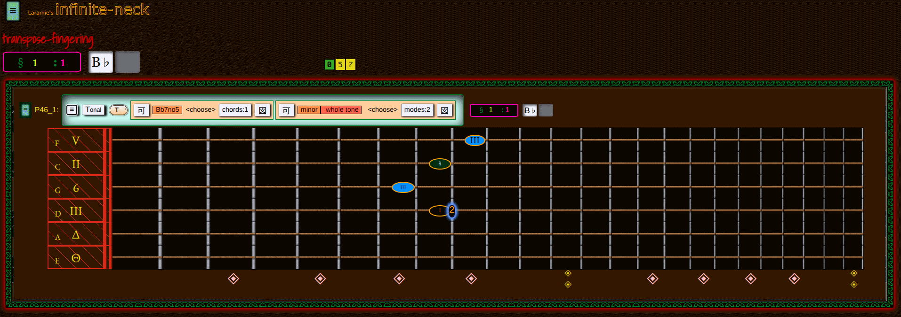 |
| P4 Guitar with skeuomorphic Theme: 'Guitar Black' |
|
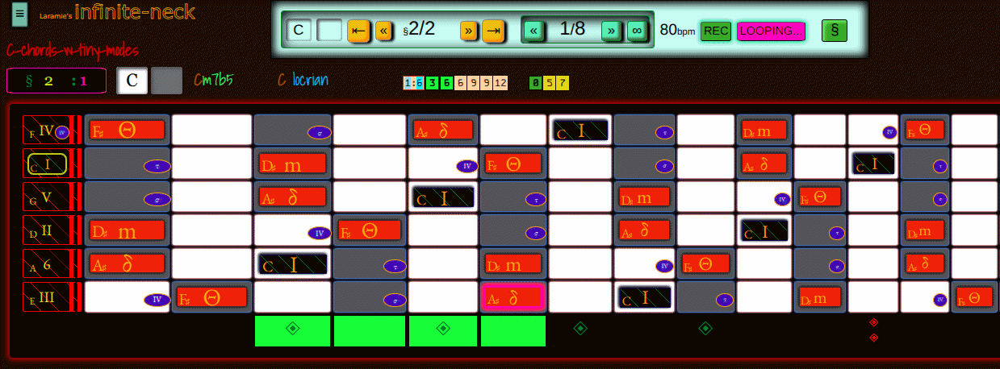 |
| infinite-neck looping chords/modes with arpeggio and transposition |
About
Getting started with infinite-neck
The best way to get started is to and open some songs from File > Song Library. Usually the first thing you want to do is hit LOOP on the Transport, but you can also use the Transport to walk through the Sections manually. Then go through the menu buttons on the top of the page to find most of the features.
infinite-neck helps you visualize notes across the neck of your instrument.
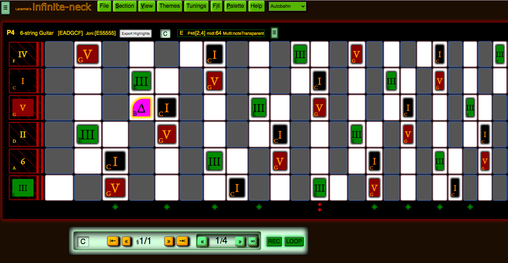
The fretboard is displayed as a spreadsheet-like table with cells representing each fret/string position. Clicking on cells puts "notes" on the virtual neck/fretboard, showing where you'll play them on the real fretboard of your instrument. You can add bars and beats, and loop the song. There's music theory baked into the tool, so you can automatically highlight all legal notes in G Mixolydian, for example, with separate sets of colors for chord notes, root, scale notes, passing-tones, and blue-notes.
infinite-neck has the following uses for practice and sharing:
✓ writing down new-to-you and interesting chord fingerings.
✓ capturing a concrete way to play a song.
✓ communicating the fabric of a sound: the possible notes and their moods.
✓ creating art with the patterns of notes, another way to internalize the layout and relationships of notes.
✓ improvising over the changes while looping.
You can run the program from my website:
• demo.laramiecrocker.com/infinite-neck
• No login required, free to use.
• Download/save the songs you create for later use or sharing.
Or, you can download the project from source in Github: github.com/laramie/infinite-neck
• Written in HTML, Javascript/jQuery, and CSS.
• Creative Commons Attribution-NonCommercial-ShareAlike license.
• Serve it up from a localhost python server such as python -m SimpleHTTPServer
• Serve it up from a localhost python3 server such as python3 -m http.server 8000
• Point Chrome or Firefox at http://localhost:8000/, and enjoy!
Instruments
✓ Supported instruments: guitar, bass, mandolin, cello, piano, organ, midi-pads, uke, and banjo.
✓ All support left-handed and right-handed players.
✓ Each instrument may have multiple tunings.
For example, a left-handed, six-string guitar could be in Standard tuning,
or it could be in P4, Drop-D, or DADGAD.
Here is the tunings table, which shows all tunings for all supported instruments. (It's easy to add your own tunings.)
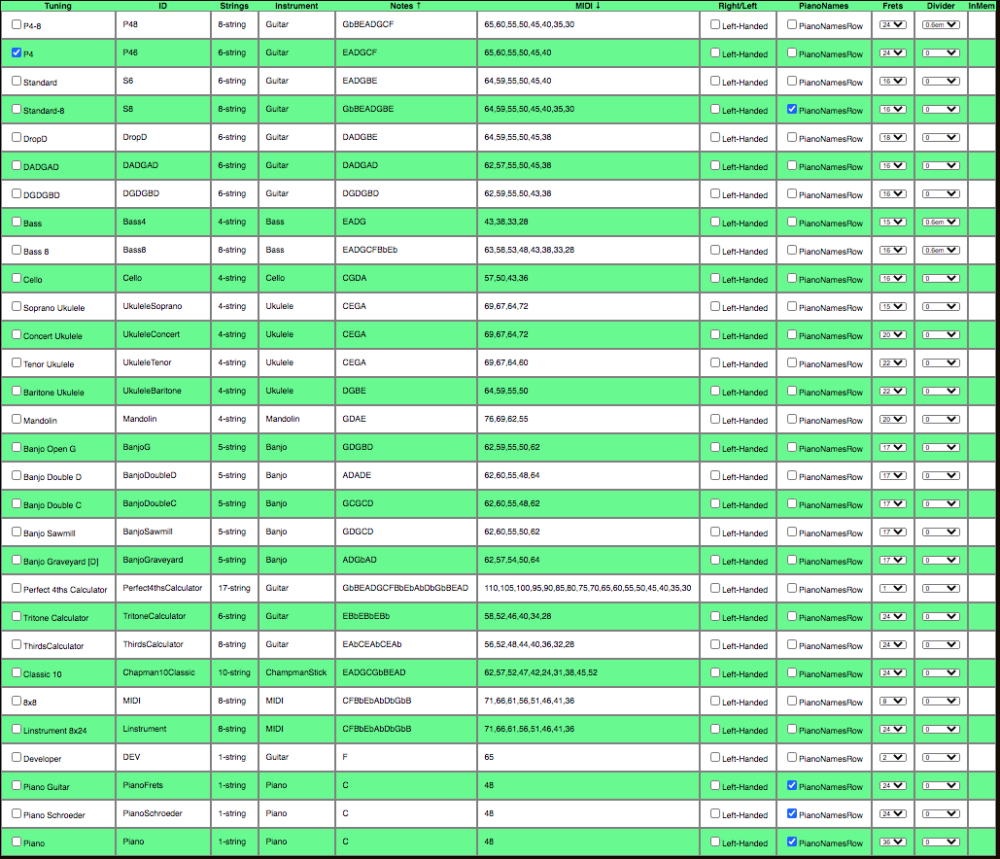
Actually, there are more, including 3-tier organs etc., but it gets hard to read the image. See the live app for the full Tunings Library.
Or you could really get lost in the world of alternate tunings and follow George Howlett's RĀGA JUNGLISM.
Instruments in Action
Most of the examples below and videos on our
youtube chanel
feature guitar.
Here are snapshots of what the other instruments look like.
Piano
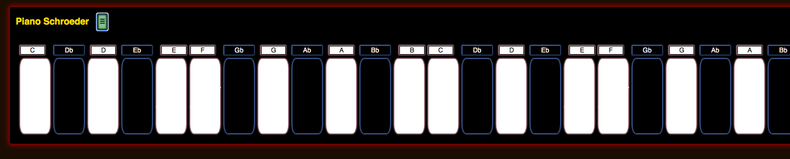
Piano Skeuomorphic
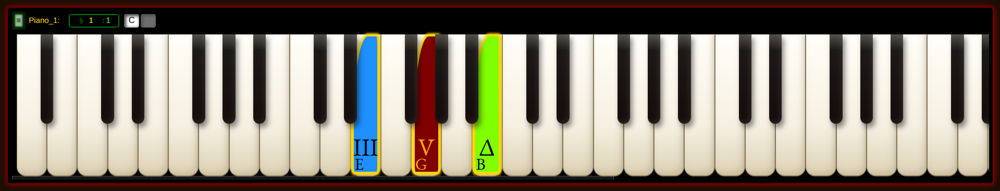
Two Ableton Controller surfaces, when used with Theme: DJ TrailMix.
Novation Launchpad 8x8
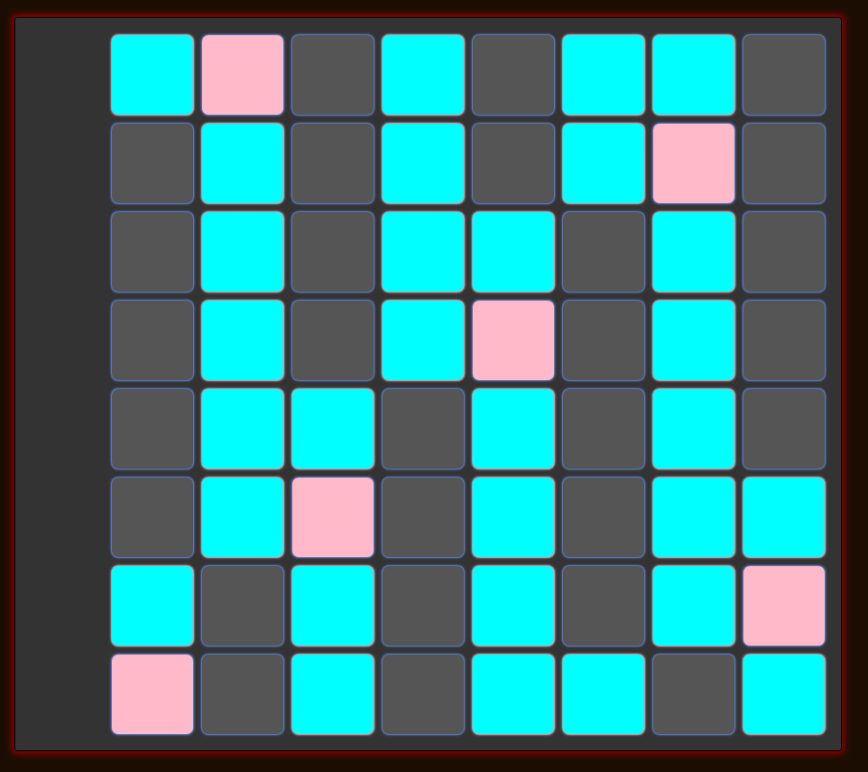
Linstrument 8x24
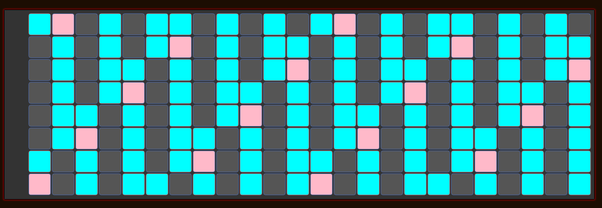
We support Banjo
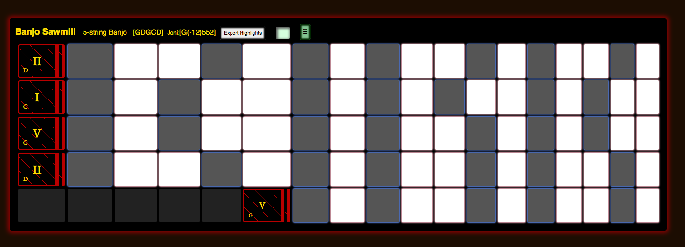
We even support the Chapman Stick!
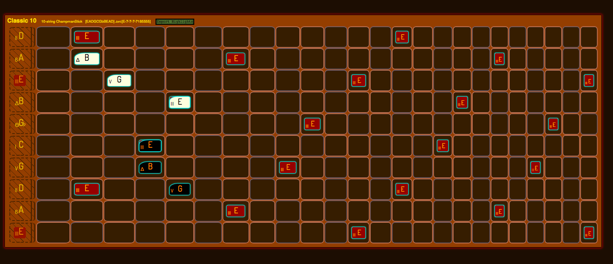
infinite-neck Walk-through
Here is a blank song, with a Theme that shows the piano key coloring scheme (i.e. Ebony/Ivory) as a backdrop for each fret:
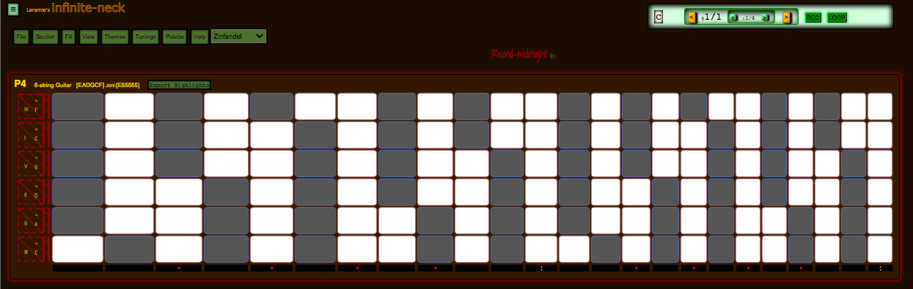
Here are a P4-tuning 6-string guitar, and a Standard-tuning left-handed 6-string, both playing a cowboy-chord D-major, and showing those notes across the necks. They are in editing mode with titles and controls, and are displayed in the same workspace.
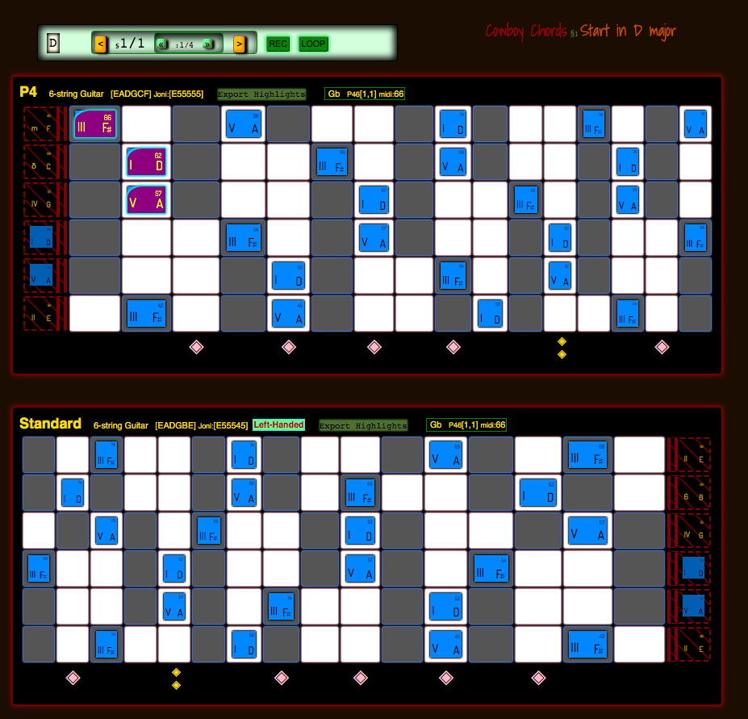
Here they are in full-screen mode.
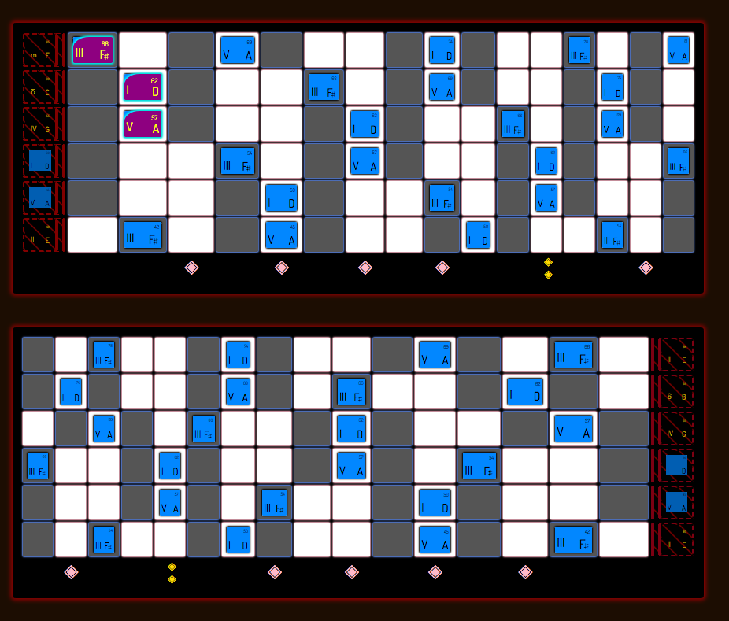
You can assign colors and styles to notes.
For example: named notes (C#), chord notes (I, III, V), scale notes (natural minor), mode notes (Mixolydian), enclosure notes, or passing tones can all have different colors and styles so you can visualize these patterns up the neck.
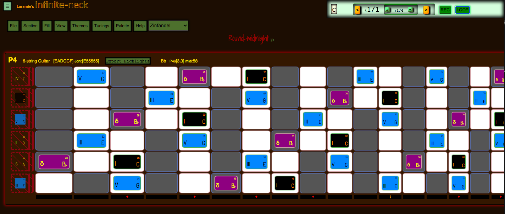
You can create Sections, and Beats within Sections.
A Section is like a bar or multiple bars where the underlying notes, modes, and keys don't change. Within a section, a beat can highlight any notes. The next beat could highlight different notes, but "Named Notes" stay for the whole section.
Each new section gets: new keys, number of beats, caption, enharmonic sharps/flats.
That is, a Song has one or more Sections, and each Section has one or more Beats.
Each beat's length (time duration) is determined with the "BPM", or "Beats Per Minute" setting, and there can be any number of beats per section, from 1 to some large integer.
Each Section also has features for using the TonalPicker chord-finder and mode-finder and recording these to be shown on the real-time Chart, and also beats-per-bar for figuring out where bars and chord changes lie in the Session and Chart.
You can then loop over the Beats in one Section, or in all Sections.
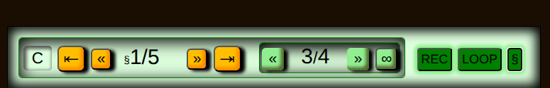
Transport showing Section 1 of 5, on Beat 3 of 4.
You can save your songs to share with someone or to come back and practice them later.
Within Sections, one key is the root key for the band, and optionally, a separate root key for the "lead". ("Bill is playing F# over Dave and the band's B".)
Additionally, anyone playing a "noteRoot" determines the apparent key, just like a Bass player would (BEHS!), and this changes what Tonal.js and the TonalPicker will present as the chord set.
You can use color to represent musical moods and fabrics.
To show four chord changes over, say, a Dmin mood, you could use one Section with four Beats, or you could use four Sections.
With four beats in one Section, the neck would look like, say, a sea of bluish notes with several notes highlighted in golden backlight.
- the chord changes would be shown by MultiHighlight or by MidiHighlight, which highlight just the relevant notes across the neck(s) with golden box-shadows.
- the band is in multiple blue colors, e.g. slightly different colors for the I, the V, the minor 3, the Seven.
- these notes keep the same position and color for all beats in this Section.
Or, with four Sections, the neck would look like a sea of bluish notes, and as each section is played, you'd see notes change style and color, forming one chord per Section with their color changes, that are different than the Dmin mood, and so draw your eyes to the chosen notes/positions within a whole fabric of playable notes. You can also add beats (Highlights) to these Sections for more expression.
The Library song theory > mode-major-transposed.json uses blue tones to represent a minor mode:
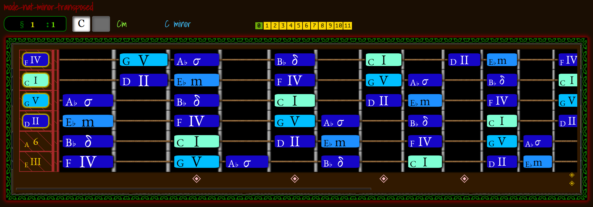
The Library song theory > mode-nat-minor-transposed.json uses green tones to represent a major mode:
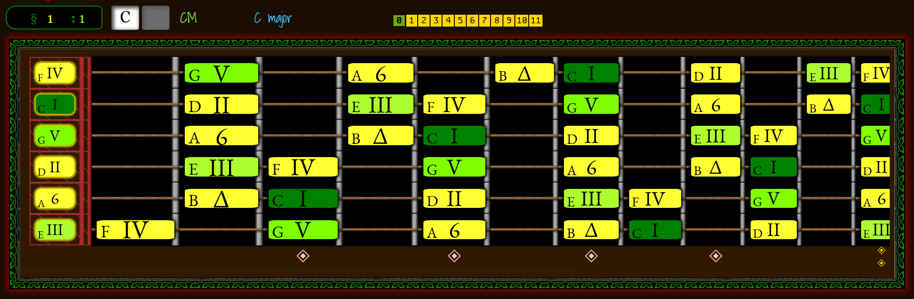
You can create Charts.
Because placing notes on the neck creates chords and modes, infinite-neck can generate a chart and let you edit it as you edit the notes. Here is a chart for a jazzy Blues song, showing just the guitar with the full LeadSheet.
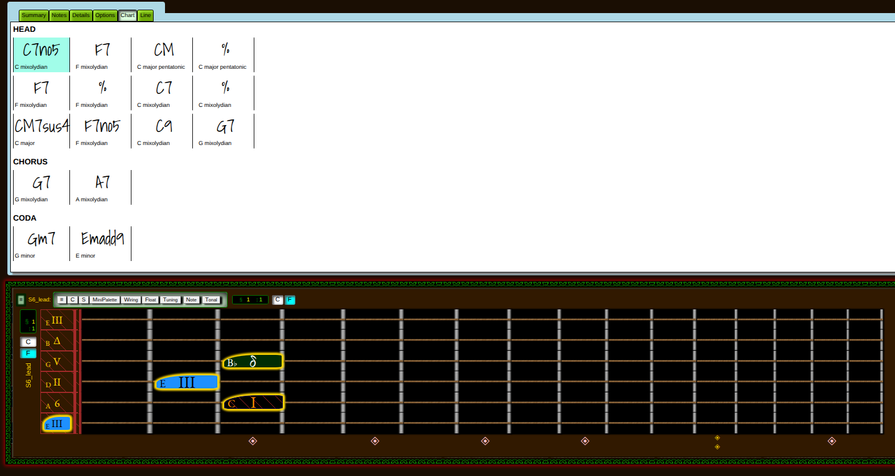
If you need more screen real estate to show a second instrument, such as the piano Listening to the guitar here, you can show just one or two lines from the chart:
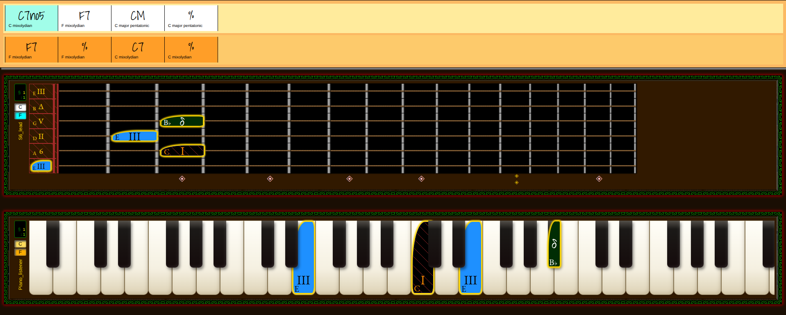
"Thinking Piano"
I find it essential, when communicating with musicians, to "think Piano". So in addition to the note markers, or fret positions that you should play, should not play, could play...etc., I have styled the guitar necks with piano key coloring embeded as ivory and ebony box inlay.
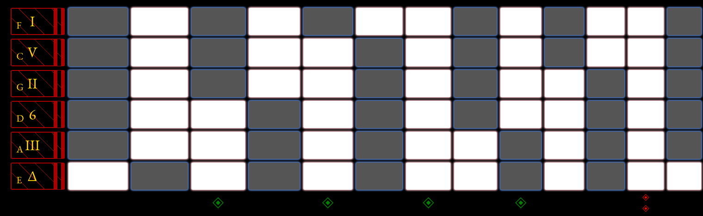
You can get creative.
Here is an extreme bit of styling just to have fun with the software, so it looks more like lit-up MIDI controllers built into your guitar neck like Guitar Hero with half of Synthesia bolted on.
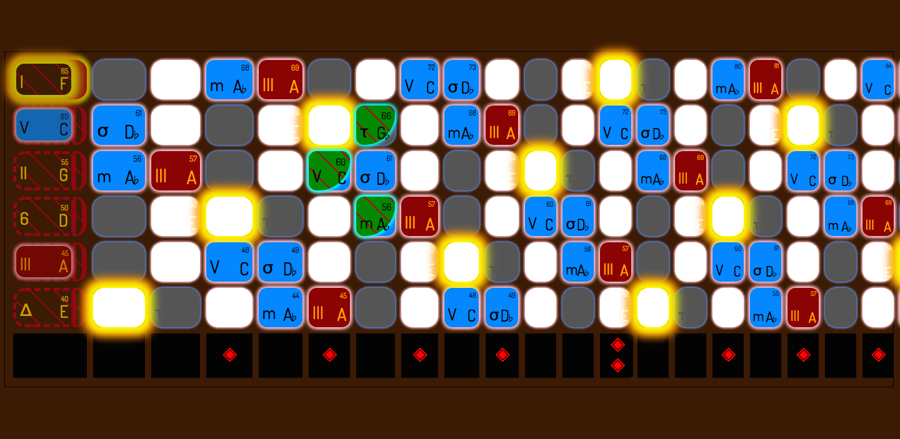
That is, ahem, a Song has one or more Sections, and each Section has one or more Beats.
Why
Obviously, the neck is NOT infinite, since we play instruments with a fixed number of strings, and a playable number of frets, generating a listenable set of tones. (But you could have an infinite number of frets, since they get infinitely smaller as you approach the bridge, albeit infinitely more unplayable.)
And thinking about the neck as infinite helped me to learn the repeatable patterns of the neck, and not be rooted to the nut or open strings as much. In fact, I use open strings more now as drone notes while I'm playing high up on the neck, because going up the neck doesn't unroot me from the scale I'm playing.
The point is that the instrument that got me started on this madness was the Strandberg Boden 8-string guitar with 24 frets! It seemed infinite to me!

Also, deciding to play this beast meant that when switching to 8-string bass (or 5-string bass), I'd have to know different layouts than Standard guitar tuning. So I decided for my own practice, I would use Perfect-Fourth-Tuning (P4) on this 8-string guitar and all my basses. Soon, the logic and playability of this P4 system led me to convert some of my 6-string guitars to P4. My soloing and comping advanced remarkably. I never realized that the part of my brain that likes to improvise gets all anxious and goes away when I hit that major third between the G and B strings and I play a real clam because I'm missing a half-step.
Along the way, I had to sort out where my Classical training and Jazz training had different names
for the pitches of a scale, what to call these enharmonically,
and what to call these pitches when the key changed,
but the played note was the same.
☞ e.g. the band jumps from the key of A
to the key of D# and you want to play the minor third function in the new key,
or you want to know what that minor third you were playing in A means,
now that everyone else is playing in D#.
"Girl from Ipanema" anyone?
☞ Classical purists note--here
we show your choice of [all sharps] or [all flats] in any key,
per Section, but no weird enharmonic names or mixed sharps and flats--sorry,
no B# or C## for you! (But see: double flats.)
So I decided to share this tool and to include other tunings, and ambidexterity, so you can use this tool in your instrument and tuning of choice.
Open some of the example files under "File | Open song from: [Song Library]" to see it in action, or watch some of the videos on our youtube chanel.
You'll want to use this tool to:
- Understand Laramie's system of scale note/function naming (a hybrid between Jazz and Classical conventions), and its uses for singing, playing, and visualizing modal and modeless playing.
- Try the benefits of Ebony/Ivory visualization from the piano, brought to the guitar. Especially when learning modes or playing in "The People's Key".
- Apprehend the patterns formed by scales and chords across and up the neck.
- Move these patterns around the neck.
- Watch lead patterns moving against patterns of comping, and practice improvising over the patterns and changes.
- See the difference between tunings in real time by having one Listen to the other.
- Transpose a song into a new key.
- Transpose a melody over a set of changes while writing a song.
- Practice a song someone has saved in some other tuning, by observing it in your tuning (see listeners).
Contact Laramie with any questions, comments, or gripes.
Help Videos
- infinite-neck Video Playlist
- Intro
- GUI Menus
- Chord Shapes (P4/S6)
- Finding chords & modes with Tonal.js
Help File
- About
- Why
- Help Videos
- Help File
- Laramie's system of scale note/function naming
- Usage
- Running a Song from the Library
- Startup
- Copy, Paste, Delete, Save, Versions, O My!
- Note Types -- special handling
- Context Help Topics
- TonalPicker
- TonalPicker in Chart > Notes
- TonalPicker in InstrumentToolbar
- TonalPicker Controls
- Using different note types with tonalSourceSet
- section-status widget
- Setting noteRoot for Tonal.js
- Tonal.js Chord Names
- Tonal.js Mode Names
- Options
- The Graveyard
- Keymap
- Command-line Menu
- Plugins Overview
- Plugins Keyboard And Menu Reminders
- Plugins Help File
- Techie Bits
- styleNum Values
- View Diagnostics
- Spelunking with Chrome DevTools
- Variables for Captions
- Macros
- transposeProgression Family of Variables
- Tonal.js Chord Names
- Glossary
- Themes Gallery
{kind=link}
Laramie's system of scale note/function naming
All note functions with all note names (Key of C, P4 tuning):
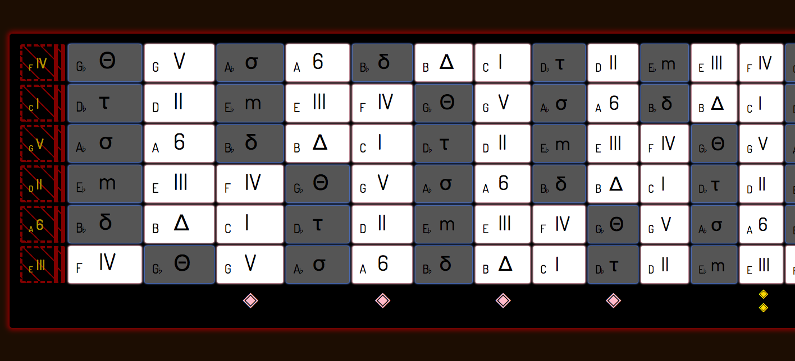
All note functions, root C shown in aqua, diatonic C-major notes in yellow, and black keys in gray with no notes,
because C-major has no black key notes.:
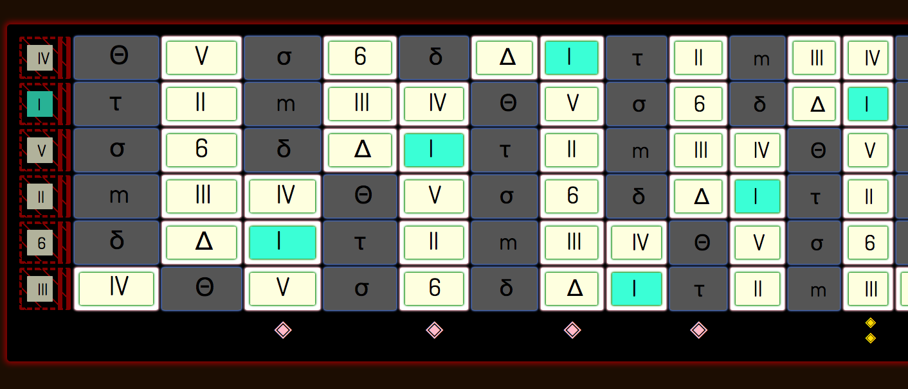
Note functions for just one octave, chromatic scale in C:
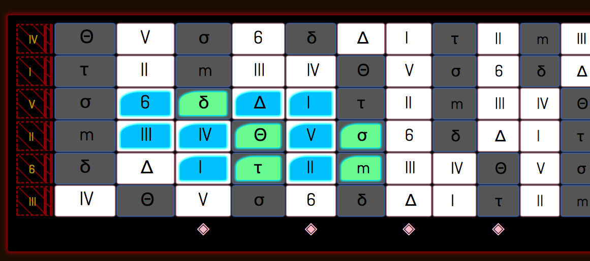
| Degree | Symbol | Name | Example in A | Pronounced | Classical |
|---|---|---|---|---|---|
| 1 | I | one | A | one | I |
| 2 | τ | tau | A# | tau (like the Greek letter, rhymes with cow) | dim2 |
| 3 | II | two | B | two | II |
| 4 | m | mi | C | my | min |
| 5 | III | three | C# | three | III |
| 6 | IV | four | D | four | IV |
| 7 | Θ | tri | D# | try | tritone |
| 8 | V | five | E | fie--rhymes with five without the "v" sound | V |
| 9 | σ | sa | F | rhymes with cat without the "t" | min6/aug5 |
| 10 | 6 | six | F# | six | VI |
| 11 | δ | dom | G | sounds like the begininning of "dominant", rhymes with Tom | dom7 |
| 12 | Δ | say | G# | sounds like "say"; like the 'a' in "major seventh" | VII |
Classical music theory provides only 7 note names, and then expects you to glue on words like "augmented", "diminished", "altered", "major", and "minor". The problem is the symbols can change, so that for example the "II" becomes "ii" if diatonic, which makes it minor. Add Jazz lingo and you'll hear terms like "flat 9" or "the flat 2". And in Classical terms it would not be correct to notate a 12-tone chromatic scale thusly: I ii II iii III IV v V vi VI vii VII. Because ii represents the minor mode and not the flatted II. Modernized Solfège get close, but few people use this system, and it does not have single-character symbols. These examples don't explain the problems well, or even correctly, but that's kind of the point. These systems do not precisely address what I want to express: a unique set of single letter names for each of the twelve tones of the chromatic scale. I do this by assigning names concretely, which apply in any 12-tone playing, assuming you know where the "root" is, or the key of the band or dominant instrument, usually the bass player. (In infinite-neck, anyone playing a "noteRoot" determines the apparent key, just like a Bass player would, and this changes what the TonalPicker will present as the chord set.) I used symbols familiar to Jazz and Session players, and added a few new ones where singular, concrete names were needed.
Features of the system
- The "Name" is my name for that symbol and function
- The "Pronunciation" is my way of singing that symbol, for example "m" is named "mi" and is pronounced like the English word "my".
- "Symbol" is also called Function, Function Name, or Note
- A Θ is always 7 steps up from the root.
- If you change root, the new Θ is calculated as 7 steps above the new root.
- A III is always a major third.
- An m is always a minor third, and so on.
- It's easy to think of the notes as simple: one character, one syllable
- I think the easiest to sing sounds are shown in my pronounciation--one syllable, ends in vowel.
Here, the Root Key is set to the key of C:
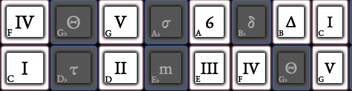
Here, it is the key of F:
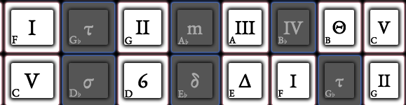
Alternatives
Navigate to the Function Symbols in the View menu:
NoteFunction symbols dropdown shown:
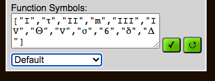
There are built-in alternatives, and a way for you to define your own.
Built-in alternatives
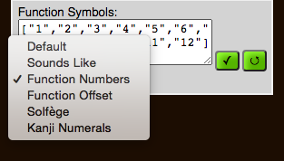
| scheme | usage | display |
|---|---|---|
| Default | Laramie's system | I τ II m III IV Θ V σ 6 δ Δ |
| Sounds Like | Sung words for Laramie's system | One Tau Two Mi Three Four Tri Fi Sa Six Dom Say |
| Function Numbers | Counting from 1 as the first, Root pitch | 1 2 3 4 5 6 7 8 9 10 11 12 |
| Function Offset | Distance from the Root | +0 +1 +2 +3 +4 +5 +6 +7 +8 +9 +10 +11 |
| Solfège | A bit of Old Europe, modernized. | Do Ra Re Ma Mi Fa Se Sol Le La Ta Ti |
| Kanji Numerals | Nobody uses this notation (yet), but Kanji is cool. | 一 二 三 四 五 六 七 八 九 十 十一 十二 |
The best way to understand these is to fill up the neck with NamedNotes, then select each of the schemes in the dropdown to try them out. They update in real-time, but you may have to scroll to see the neck.
As you do that, the editing box called Function Symbols will get populated with the internal string of characters and HTML character entities.
Setting the scheme Function Numbers for Function symbols:
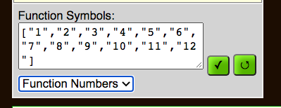
The Function Symbols get set to this:
The notes display like this:
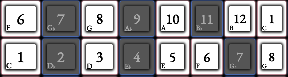
User-added alternatives
You can change the NoteFunction symbols to any string or HTML Entity you choose.
A string is anything you can type on the keyboard; an HTML Entity is something like &blah; where blah
is some string of numbers and letters--the browser turns them into things you can't type, like symbols.
You just need to edit the array here:
View | Function Symbols
This is a Javascript array, so the commas, quotes and braces must remain exactly as they are--just change the values between the quote marks, leaving the quotes, commas and braces.
They default to this:
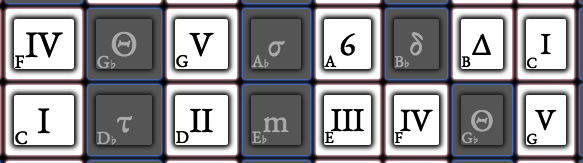
Or you could go crazy and use lots of HTML Entities:
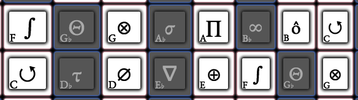
Or use regular strings, such as Solfège:
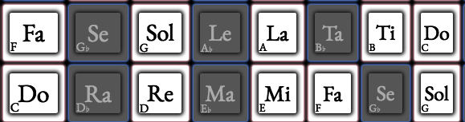
Early in the design phase, I tried extending the Classical notation to use chord function names as note function names. I find it confusing, being all too similar. So this scheme is not available in infinite-neck. Drop me a note if you have a better idea, but here is what that would look like:
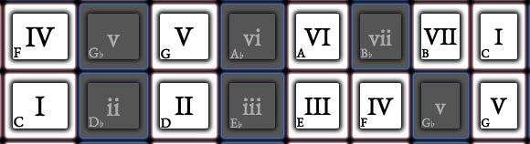
Usage
The neck is shown as a table of cells, like a spreadsheet. A cell is one of the squares on the neck, and represents one fret on one string.
infinite-neck allows you to mark the notes on your Instrument with various types of notes, shown below. Otherwise, a cell is empty. (You can also choose to show all the note names in all cells, but these won't have an inner border or backglow behind them as notes do.) When a cell has one or more notes or highlights, it is called "Active".
With the various types of notes, you can express notes which should be known anywhere on the neck, or which should be played exactly where shown. With recording Beats and ordering the Sections, and with Looping, you can then arrange the song into a practice sheet, or a visualization of notes to play or notes you could play.
To help you visualize the neck, infinite-neck shows where the piano keys would lie on your tuning. In most Themes, cells have a white background for white keys on the piano, and a gray background for black keys on the piano.
Tunings may change on your guitar, such that a C may the the first fret on the second string, or it may be the open second string in P4. But a C is always a white key, and a C♯ (or D♭) is always a black key, except for these Themes:
- "Coffy Brown" does not make a distinction between black and white.
- "Blade" has black for black keys and hexagons in the white keys.
- "Reverse" has white for the black keys, and black for the white keys.
- "Snow" has white for all keys, with subtle grey borders.
- "Wite-Out" has everything white and behaves as a completely blank canvas.
- "Blackout" has all black keys.
- "Matrix" has all black keys and command-line colors.
- "Landau Top" has brown and tan keys (just like a cherry, stock Chevy Monte Carlo).

And any Theme can be changed by choosing the same color for noteWhiteKeyColor and noteBlackKeyColor in the Theme.
Here are six cells showing four white-keys, and two black-keys. A "Single" note is placed on A, and a "NamedNote" is placed on F♯ which selects all F♯s.
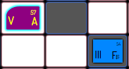
Click a Palette note kind (Named, Single, Tiny, Bend...).
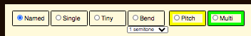
Click a Palette radio button to select a note role, e.g. Root or Chord,
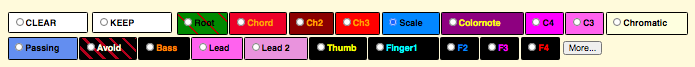
or just some color you like.
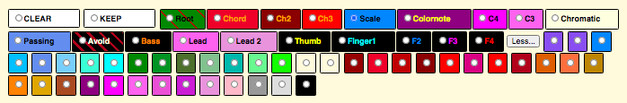
Click any cell. Cells of that note name turn the selected color.
- e.g. Click C, E, and G.
- Now with "Named" notes, you have all Cmajor chords shown.
- With "Single" notes, you just have the cells you clicked.
- With "Tiny" notes and "Bend" notes, you'll have smaller note functions placed over the cells.
Click the CLEAR radio button, then any note in that cell, and the entire cell will be cleared of all note types. However, if you want to clear just one note type, then while you have a note style selected, you can also just click the note again with the same style to remove that note--click on, click off, click on, click off. Karate Kid anyone?
Check the 'Highlight' checkbox to put a border around just one square, e.g. to highlight the actual chord voicing you would play. With "Pitch" and "Multi" notes, you'll just highlight those notes:
- Pitch shows all notes with one MIDI pitch highlighted in yellow outline on that instrument.
Here it's a P4 guitar, showing all positions with MIDI pitch 62.
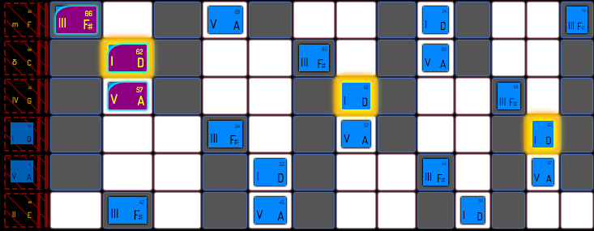
- Multi lets you highlight multiple notes at once, by played position.
Here's that same P4 guitar. We have, again, shown a D-major chord across the neck with NamedNotes in blue.
The actual fingering we'll start with is shown with SingleNotes in filled-in magenta.
Plus, we have highlighted, in magenta outline, a handy dominant seven chord,
which we could play as a substitution if we wanted a Blues seventh.
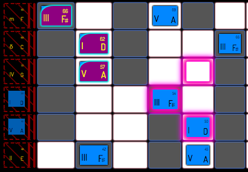
Click the 'KEEP' radio button, to avoid making changes when scrolling around.
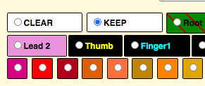
Click the 'CLEAR' radio button to delete all notes in the cell you click (Named, Single, Tiny, Bend, Highlight). This does not clear any recorded notes.
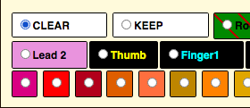
Running a Song from the Library
From File > Song Library you can launch one of our demo songs or practice songs. The demo songs show features of infinite-neck. The practice and name-that-note songs provide drills such as arpeggios and flashcards, and are a great way to get familiar with what infinite-neck can do and to learn the program. This section goes over some keyboard shortcuts and command-lines that help you run the songs without having to know about how to set up brand new songs or set up plugins.
Note: the keyboard shortcuts work best when you hit ESC first to get rid of elements that trap keystrokes like the Palette, the View page, the command-line, etc.
LOOP
The songs in the File > Song Library are all designed for looping. Make sure the Transport is showing with keyboard shortcut t so you can hit the button. There are several LooperLights (one in the Song Caption, and one in each Instrument Caption or Left-side rail) and if these are visible, they show a green border when not looping, and a magenta border when looping. So once you are familiar with these, you don't need the Transport: you can just toggle (start/stop) looping with keyboard shortcut l (see: looping shortcuts).
You can also use the command-line. ESC followed by toggles looping. toggles beat looping.
Once you are looping, you can watch the Section numbers and the beats to figure out where you are in the song. These appear in the Transport and the LooperLights. Many of the Song Library songs are built with plugins that generate notes during looping, so they will look blank until you start looping.
Showing Note Names
The notes that are played in a Section can display Note Names, or Note Functions, depending on the settings in the View page. However, when you want to just view all the Note Names for the entire neck, it is handy to toggle them all on and off.
Use to show all NamedNotes in every cell transposed into the current key.
Use to hide all NamedNotes again.
Use to toggle all NamedNotes, and leave command-line showing.
☞ Note: these are command-line commands, follow the link to learn how to use the. Basically, hit ESC and then just start typing the letters, including the leading /.
☞ Use one-line command-line to make the command-line smaller.
Changing BPM
When practicing with the Song Library songs for practice and name-that-note, you'll want to change the Beats Per Minute (BPM) as you get faster. Start very slowly, such as 20 BPM. To set it, use and then type 20 and hit ENTER.
Changing Instruments
Many of the songs in the Song Library use macros in links you can click that will swap out Instruments. Simply click on a link to choose one of the pre-wired Instruments. (To add an instrument not in the selections, use the Tunings button, add your Instrument, and wire it in by creating a new macro for it. Mostly the macros just reset the Instrument setting in the various plugins used.)
Raising Plugin Settings
Many of the songs in the Song Library use links to raise a plugin setting from the Graveyard. This enables you to swap out plugin settings on the fly, so you can switch transpositions, arpeggio positions, etc. Just click the link and restart the looping, since a raise link stops looping.
For example, the name-that-note songs allow you to change TransposePlugin settings with a handy table:
| Key of C only | transpose.no-transposition |
| Chromatic | transpose.chromatic |
To change transposition intervals (chroma) yourself, you can just go into the TransposePlugin and change the property chroma. Hit ESC, then . The numbers of each chromatic step are separated by commas, so 3,6,9 would set the intervals to [0,3,6,9] since the array brackets are added for you, and the inititial key (0) is added for you. You would enter that like this:
Songs in the Song Library use ArpeggioPlugin's positions property to set the range of frets to select for rendering the notes in the arpeggio. Playing in "First Position" on a guitar means your first finger covers fret 1, and all your fingers cover frets 1 through 4. We include the Nut in First Position so you are reminded to use open strings when running name-that-note for example. So First Position has positions 0-4, then Fifth Position has frets 5-8. Since many diatonic keys play better in Fourth Position than Fifth Position, the songs may use Fourth Position instead.
Setting Positions Manually
If you want to set other positions manually, edit the ArpeggioPlugin's positions property with then enter the values:
This is equivalent to 1st, 5th, 8th (1st should start at 0 so you get open strings)
Or set the values to 1st, and 7th positions:
Changing View Settings
If you set any View options, it is best to save them by being in the first Section and hitting "Save Display Options" so they persist when looping. For example, View > Hide Named Notes or View > Show All Note Names
Song Resets
If you change settings and want to get back to the start of the song, you can usually just navigate with the Transport to the first Section, or use the command-line .
However, sometimes if you are partway through Transpositions, you can reset to the beginning of the Transposition cycle and any ArpeggioPlugin internal values such as positions. To do this, performa a "Reset song (hard)" with . The "hard reset" resets the TransposePlugin to the initial state. A "reset song" with resets the Arpeggio, but might not fully reset the Tranposition.
If you get into using the practice songs, you may want to continually go back to the first Section, or fast-forward to the next Section, or go to the last beat in the Song so that the TransposePlugin transposes and then the song restarts. These can be accomplished with the spacebar mappings, for example "Restart song": or "Last beat in song":
With these spacebar mappings you can just hit the SPACE key and your chosen action happens. This is useful when you have your instrument on your knee and you just want to swat at the keyboard during exercises.
Startup
infinite-neck starts up with a blank song, and default instrument you can just start putting notes on by clicking in the cells that represent fret positions.
Once you have some notes you want to save as a song, use File | Download to save that song to your local computer. Later, you can open this song with File | Choose File. All the Sections, Instruments, and Notes, as well as the preferences and choices you make are saved in that song file, such as Tunings, Themes, View Options, and the Graveyard.
infinite-neck remembers just a few things between sessions that are not in the Default song. These you can set with the buttons on the Desktop page: Desktop | Save Scaling Prefs and Desktop | Save Instrument Prefs and apply to the Default song you get when you start up. Opening a song generally sets Scaling Prefs, and certainly has its own instruments displayed.
infinite-neck will also accept URL query params and fragments:
| URL input | Meaning | Example |
|---|---|---|
| tuning | Show a default tuning when launching without opening a song. Values are Tunings | Tunings Library :: ID, e.g. Bass4, P46, S6. | http://demo.laramiecrocker.com/infinite-neck?tuning=Bass4 |
| song | Open a Song Library file by path under songs/. | http://demo.laramiecrocker.com/infinite-neck?song=name-that-note/name-that-note.json |
| macro | Run a macro id after song load. If no matching macro exists in the current song, this safely does nothing except writing a log message. | http://demo.laramiecrocker.com/infinite-neck?song=name-that-note/name-that-note.json¯o=P46 |
| fragment: raise/macro | Run Info-link actions from a hash fragment: one or more raise=plugin.savedKey entries and optional macro=macroId. These only work with a loaded song. | #raise=transpose.blues,raise=arpeggio.firstPosition,macro=S6 |
Copy, Paste, Delete, Save, Versions, O My!
infinite-neck doesn't have many of the things we associate with computer programs. It doesn't do Copy/Paste how you might think it does, for example (it uses the ClipPlugin, which selects notes by algorithm, and pastes in compatible positions or instruments). It doesn't do Undo/Redo. But there are functions for getting what you need to get done, with different idioms.
| Idiom | What to do |
|---|---|
| Undo/Redo | Use the Graveyard to revive things you delete: Sections, Stylesheets. You can revive multiple times, so this can be used to copy/paste a Section. You can also Clone a section. |
| Copy Section | Use Clone or Shallow clone on the Section Drawer in the Transport. Clone copies all notes and Display Options. |
| Delete Notes | To delete a note you placed by clicking, just click again. You can also select CLEAR on the Palette and and all notes in that cell will be deleted when you click on a note in a cell.
Using the ClipPlugin, you can also select the kind of note to include and Cut the notes, which removes them from the Instrument in that Section, and puts them in the Graveyard. |
| Copy Notes | You can copy/Clone whole sections, and within that new section you can transpose. So the flow would be:
|
| Copy/Paste Notes with ClipPlugin | , or SHIFT+C which will bring up the ClipPlugin.
With Clip, you can copy, cut, and paste notes from the
selected Instrument, which is where the notes come from or go to. MIDI Paste pastes to another instrument based on MIDI numbers, not positions.
Copy listened notes copies notes that are visible in the instrument but aren't recorded in that instrument, when that instrument is listening to another.
The workflow is:
If you want to paste into a compatible instrument in another tuning, choose that Instrument before you paste, then use MIDI Paste, which places notes by MIDI number not position.
|
| Open | File | Open Song | Choose File, or File | Open Song from [Song Library] |
| Save | File | Song Name then File | Download . This downloads the song to your computer. To open it again later, use File | Open Song | Choose File. Since Undo/Redo is not available, save your file often so you have versioning. |
| Version | Since you can download a song multiple times, your browser will likely add sequence numbers to the filename if it would conflict with a filename in your Downloads folder. Voila! Instant versioning. |
| Merge | Open the first song. Check the checkbox just under Open Song that says "Append sections to current song" then open the second song, and you'll have those sections appended. |
| Preferences | Preferences are stored in the song file. If you have preferences you'd like to apply every time, create a song with one empty Section, then save it with a name like Preferences or Template so you can find it later. Always use that file at the start of your work and change the name to the new, working song. If you want to open another existing song, open your Template file first, then open the song you want to see second with the checkbox "Append sections to current song". |
Note Types -- special handling:
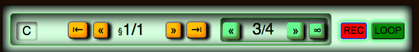
✓To keep highlights: record them in individual Beats within Setions.
♦ Highlights you get when "REC" is inactive are not kept in the Section.
✓NamedNotes persist in Sections, but can't be recorded in Beats.
✓Highlights (Pitch and Multi) persist in Sections only when recorded in beats.
♦ If "REC" is active, Highlights record into beats, as you click them
♦ If "REC" is inactive, Highlights play into the Section
♦ But they go away on navigation or placing another note or Highlight.
♦ Highlight "Pitch" shows all notes with the same MIDI number.
♦ Highlight "Multi" lets you highlight multiple notes.
✓SingleNotes, TinyNotes, Bends, and Fingerings
♦ Persist in Sections, and can be recorded in beats.
♦ If "REC" is active, notes record into beats, as you click them.
♦ If "REC" is inactive, notes record into the Section, that is, they persist for all the beats.
✓SingleNotes are like NamedNotes, but you only get one note, not all notes that match the note name.
♦ So a NamedNote "F#" will select and color all F#'s on the neck.
♦ A SingleNote "F#" will just color one F# cell: the one you clicked.
♦ A SingleNote has a corner rounded off in its display, and a brighter default backglow.
Here is a snapshot of a part of the neck showing all the Active I's and III's with NamedNotes, and one Active τ with a SingleNote.
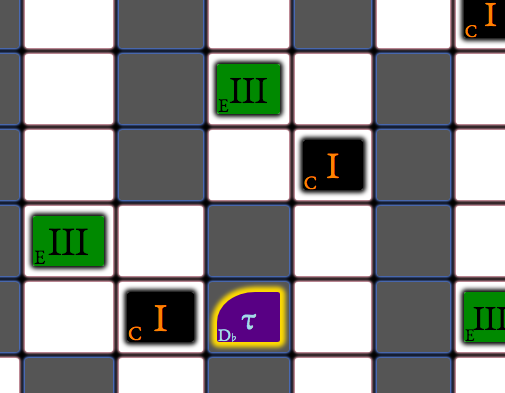
Context Help Topics
File
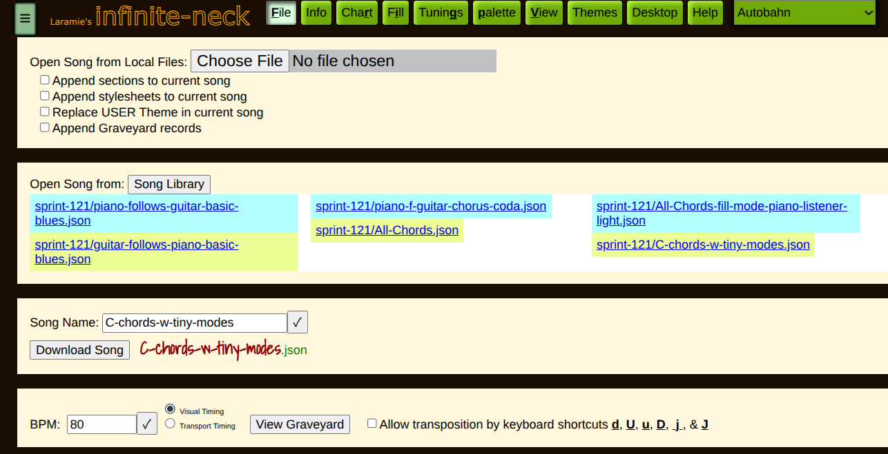
Keyboard shortcut: F is an uppercase "F", lowercase "f" being for fullscreen.
The file menu lets you open songs to play or edit:
✓ songs from your local system you created
✓ songs someone sent to you
✓ from the library on our web server
The file menu lets you save songs to your local system.
☞ Enter a name for your song (e.g. change the name from "Round-midnight" to your song name).
˙ This file is in JSON format, which is readable in any text editor.
☞ Click the "Download Song" button.
˙ Affirm the system dialog, choosing a location for your file.
˙ From here, you can archive it, share it, and open it later to view it again.
Song Library
Songs are grouped:
- demo shows infinite-neck features.
- practice has songs with drills such as chords, modes, and arpeggios.
- name-that-note has games for memorizing where all the notes are on the neck for various instruments and positions.
- theory demonstrates topics of music theory.
Each song shows Role badges for which Instruments are used. Main is a regular instrument (neither Listener nor Observer),
and you can have multiple Main instruments. Instruments may be hidden (you un-hide them in 'My Tunings'), and
are shown with grayed tags.
The Role badges look like: Main
Main-hidden Listener Listener-hidden Observer Observer-hidden
Info (Song)
The Songfile Info page lets you keep comments right in the song file itself. This is handy for things like instruction on how plugins are set up, reminders about using flashcard mode, or a short formatted description of the song. It is also the place to store superlinks which you can use to activate saved plugin settings and run macros. You can format your comments with simple HTML.
You can open Songfile Info in any of these ways:
✓ Click the button in the top menu button row.
✓ Use the File menu command .
˙ Some songs may also open it automatically when the song is loaded.
The page has two tabs:
✓ Info shows the stored content as rendered HTML.
✓ Edit shows the raw HTML in a textarea, so you can type or change it directly.
To close Info, click or press ESC.
There is no separate Save dialog. Changes are kept when you:
✓ leave the textarea,
✓ switch away from the Edit tab,
✓ change the "show on open" selector,
✓ or click the little Save checkmark button.
Allowed HTML
Allowed HTML in File > Info is intentionally limited to simple formatting. Think of it as safe document markup such as:
✓ paragraphs and line breaks,
✓ headings,
✓ lists,
✓ emphasis such as bold and italics,
✓ code/preformatted text,
✓ and simple tables.
˙ Scripts, links, forms, images, styles, and other active or external content are stripped out.
˙ EXCEPT: links to URI fragments (#...) are allowed, because they jump to actions within infinite-neck. See superlinks below.
˙ Special tags: <kbd> will create a formatted command-line keyboard examples, and <i> and <b> within that create prompts and triggers.
˙ Special expansions: Any variable in can be pasted into the Edit area and will expand in the Info area, reflecting values from the Song and Current Section.
- ${songInstrumentBadges} - this expands to the Roles the Instruments play in this Song.
- ${songInstrumentTable} - this expands to the Roles, listing each Instrument.
Example of ${songInstrumentBadges}
This song has four Bass instruments installed: 4, 5, 6, and 8 strings: Bass4Bass5Bass6Bass8
Example of ${songInstrumentTable}
| Role | ID |
|---|---|
| S6 | S6_back |
| S6 | S6_lead |
| S6 | S6_forward |
| P46 | P46_1 |
The show on open selector has three meanings:
✓ none means do not automatically show Songfile Info when the song opens.
✓ parked means open it in its normal parked place in the app.
✓ float means open it as a floating window.
If the Songfile Info content is empty, the app treats that as no Info and will not auto-open it, even if the selector had been set earlier.
Links and superlinks
In File > Info a link within infinite-neck is allowed, because it just invokes an action within the app without taking the User anywhere else. A "superlink" is a reference to multiple actions. These are tags like:
- hyperlink: <a href="#raise=transpose.blues">Blues Transposition</a>
- superlink: <a href="#raise=transpose.blues,raise=arpeggio.firstPosition">First Position Arpeggio Practice</a>
- superlink: <a href="#raise=transpose.blues,arpeggio.firstPosition">Blues, First Position</a>
- superlink with macro: <a href="#raise=arpeggio.color,macro=show-instruments">Arpeggio Color + Show Instruments</a>
Note that the superlink supports two formats for plugin raise links: one where raise= is repeated separated by commas, and one where the raise= appears only once and its values are listed separated by commas. The values are the name of the plugin, plus a dot, plus the name you saved the plugins settings as--preserve these values. A superlink can also include macro= followed by a song macro id, so one Info link can raise plugin settings and then run a macro.
These links can be crafted from links put in Info for you by the menu item in plugins, such as in the TransposePlugin, for example. inserts one hyperlink. To create superlinks, just edit the HTML in the Info > Edit tab and combine the links into one link following the above pattern. gives you the href, and you provide the text for the link.
Note also that when you save a link with , or or , it asks you for the name. The default name for the saved plugin settings is "USER". Certain menu-items auto-save, which saves them to USER as well, so if you want to create a link, you should really provide a name other than USER, such as I-IV-V-progression . Names can include hyphens, underscores, and alphanumerics, but can't start with a digit.
Chart
Chart > Summary Tab
Summarizes all the Sections. Shows the Chord and Mode of each Section as they are stored in the song, as well as the values of KEY during transposition while looping with TransposePlugin Enabled.
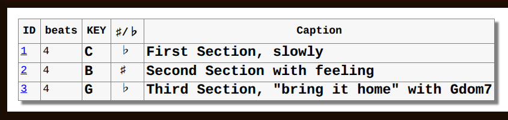
Chart > Input Tab
See: All Tonal Mode Names
Enter the chord name with root, such as Cm7 or CM, then press SPACE to cycle through suggestions, or hit ENTER to accept the suggestion and move on to entering the mode.
When entering the mode of the Key the Section is in, you can skip the Key and just enter mix and C mixolydian will be suggested. You only need to enter the Key if you want to play in a Key mode different than the Section Key.
For mode, you can start with the Key and type the mode. The very first space after the Key not needed but is allowed, and after that you should just skip spaces, because the SPACE key is for cycling through the suggestions. If you want, you can type a space with SHIFT+SPACE, but the suggestions will work without spaces. So you can enter Cmixolydian, or C mix, or Cmix and the suggestions will pop up.
There is a special letter while focus is in the chord input box: ! creates a new Section, with options shown in the table below. While in the chord or mode input boxes, the special letters , and . navigate Section as shown below.
| Special characters in chord input box | |
|---|---|
| ! | new § in C |
| !d | new § in D |
| !/D | new § in D |
| !f/d | create new § in D, LeadKey in F |
| !f/ | create new § in C, LeadKey in F |
| Special characters in chord or mode input boxes | |
|---|---|
| , | goto prevSection |
| . | goto nextSection |
| ENTER | accept chord or mode and move to other input box |
| SPACE | next suggestion (cycles around at end) |
Chart > Notes Tab
Provides more note detail than the Summary Tab. Follows the current Section. Shows NamedNotes, PlayedNotes, and RecordedNotes. Also provides fully functional TonalPickers that update in real-time
Each Instrument has its notes shown, and this is essential for figuring out who is on "Bass". The Instrument playing a noteRoot is shown, and this is who determines the root used for Tonal chord and mode suggestions. Under Chords column, you'll see noteRoot:Player: P46_1:F» if the P4 tuned 6-string guitar P46_1 has a noteRoot. If an Instrument does not play a noteRoot, then another player can play a noteRoot and this will be detected and reported in that column. The order is: look in the current Instrument, then look in other Instruments, in the order in which they first entered notes in the Section. So it's a bit brittle to depend on that order, so it is best to limit one "other" player to play noteRoot.
That is, a guitar can play a noteRoot and this takes precedence for that guitar. If the guitar doesn't, and the Bass player does, it all works well. Two guitars could both have noteRoot and each would get suggestions based on their own notes. But if one guitar doesn't, a Bass player does, and a second guitar does, then which noteRoot the first guitar sees is unstable.
See also: TonalPicker in Chart Notes.
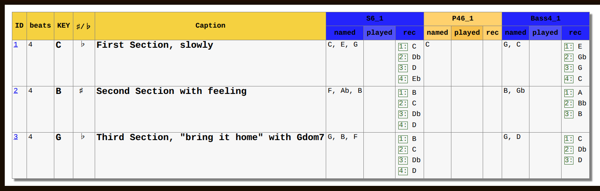
Chart > Details Tab
This is the place where you can set how the Chart sorts the Song Sections into Chart Positions (INTRO, HEAD, CHORUS, ...).
Beats is a number that determines how many beats to show in a Bar. So if you have 12 beats in a Section, and you enter 4 in the Beats input box, then you'll get three bars on the Chart, the first with the chord, the second two with the chord-repeat symbol: %
Caption Width allows you to place (or hide) captions on the chart.
Caption allows you to quickly edit all the Captions in one place.
Chart > Options Tab
There are two Charts, really. The first is the chart seen in the Chart Tab Chart > Chart. The second is seen in the Line Tab: Chart > Line. Within the Chart Tab, you also get style options set by Bar Style. Line uses a condensed version of Bar Style: LeadSheet, so you can't put Line into "Bare" Bar Style, for example.
In fullscreen mode, you can show only show Line. Trying to show the full Chart in fullscreen mode exits fullscreen. To show the Line chart in fullscreen, enter fullscreen with keyboard shortcut f then use command-line . Under Options, choose Show Next Line to have the Line chart show the upcoming chart line in addition to the chart line the current Section is on.
The Chart Names textarea determines which additional Chart Positions will be available in Chart > Details :: Position. You can add your own, or edit the list. Some built-in Chart Positions will remain.
Chart > Chart Tab
A full LeadSheet chart appears here, based on the options in Chart > Options.
Chart > Line Tab
A condensed version of the LeadSheet chart, available in one or two-line versions, based on the options in Chart > Options
Transport
The Transport lets you:
- View the key of the current Section.
- Navigate through Sections, and beats in each section.
- REC: Record notes in beats in the current section. These become RecordedNotes and show up when looping.
- LOOP over the beats in just one section, with the little infinity button: .
- LOOP over the Song, all Sections.
- Open the Section Drawer with the button or with keystroke s
Transport showing Section 1 of 5, on Beat 3 of 4.
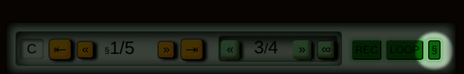
On the transport, the button with the section mark: § shows/hides the Section Drawer:
Special SPACEBAR Mapping
Using the command-line, you can map the spacebar to actions for this session. (This mapping is not saved in the songfile, so you'll need to map again if you open another song.) These are used to reset the song during TransposePlugin looping, or jumping to different navigation points while looping, practicing, writing songs, running ArpeggioPlugin in flashcard mode, etc.
You can map the spacebar to one transport action at a time. Use the File menu path to choose what the spacebar should do.
The top-level spacebar mappings are:
- Restart song:
- Restart section:
- Reset song:
- Reset song hard:
- Unset the spacebar mapping:
You can also map the spacebar to section navigation with or beat navigation with .
Once mapped, pressing SPACE runs that transport action directly. This is useful for when you have your guitar balanced on your knee and want to reset a loop with a quick swat at the keyboard.
Reset song returns you to Section 1, Beat 1 and preserves the active loop mode if one was already running. Reset song hard does the same repositioning, but also triggers the stronger reset behavior used by plugins that need to clear generated state.
Command-line menu for SPACEBAR Mapping
Transport Navigation Table
The Transport: C G §1/2 1/4
This table summarizes the transport navigation commands available in the app. The Menu column shows the command-line path, and the UI column shows the button in the Transport.
| Navigation | Key | Menu | Action | UI |
|---|---|---|---|---|
| FirstSection | < | firstSection | ||
| PrevSection | , | prevSection | ||
| NextSection | . | nextSection | ||
| LastSection | > | lastSection | ||
| FirstBeat | gotoFirstBeat | |||
| PrevBeat | b | prevBeat | ||
| NextBeat | nextBeat | |||
| LastBeat | gotoLastBeat | |||
| LastBeatInSong | gotoLastBeatInSong | |||
| LoopBeats | toggleLoopBeats | |||
| RECORD beats | SHIFT-R | REC | ||
| LoopSong | l | toggleLoopSections | ||
| SectionBegin | gotoFirstBeat | |||
| RestartSection | gotoFirstBeat | |||
| RestartSong | < | firstSection | ||
| ResetSong | resetSong | |||
| ResetSongHard | resetSongHard |
Section Drawer
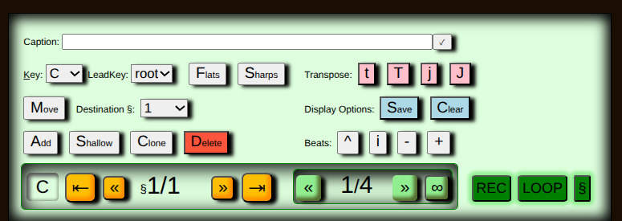
On the transport, the Section Drawer is opened, giving you access to all the Section controls..
Open the Section Drawer with the button or with keystroke s
The Section Drawer lets you:
- Set the Caption of the current Section. (Might need to hit a (while NOT editing the Caption) to show the Song caption.)
- Set the Key of the current Section. (Also keyboard shortcut k cycles through these.)
- Set the LeadKey of the current Section (TinyNotes follow LeadKey) or "root" to follow the Key.
- Set the enharmonic choice of Flats or Sharps for the key of the Section. [See Key Change below]
- Transpose all NamedNotes in the Section. (Use keyboard shortcuts for these: File | Allow transposition by keyboard shortcuts)
- Add, Shallow clone, Clone, and Delete Sections
- Move Sections to a Destination of a Section number or BEGIN or END, bumping any Sections there later.
- Save and Clear the Display Options, which include the Root Key and Lead Root Key, plus all the items on the View menu, plus Theme and Stylesheets.
- Add a beat before the existing first beat
- Insert a beat, moving the current beat and all others later
- Delete the current beat
- Add a beat after the last beat
- To LOOP over the beats in just one section as you add notes to the beats use the Transport infinity button:
Section Destination
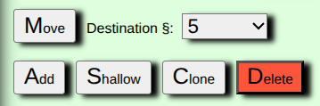
Destination § is a dropdown that gets updated as you navigate Sections. This is the Destination Section number of Move, Add, Shallow, and Clone. There are some subtle differences.
When moving Sections, pay attention to the Destination. It's just like a deck of cards: if you pull a card out of the middle, and put it in earlier or later in the stack, the cardinal number of the cards changes. This is where the moved Section ends up.
- So chosing Destination of 3 moves the current Section to Section 3, and Section 3 becomes Section 4, Section 4 becomes Section 5, and so on to the end of the Song. Also the Sections after the current Section get moved towards the beginning of the Song to close the gap.
- Chosing "BEGIN" as the Destination moves to Section 1, pushing the existing Section 1 to Section 2, and bumping all other Sections later as well,
- Chosing "END" as the Destination moves the current Section to the end, after all existing Sections, the Sections after the current Section being moved towards the beginning of the Song to close the gap.
When Adding or Cloning Sections, new Section goes after the Destination which gets updated as you navigate Sections. However, if you change the dropdown, the new Section will go after that Section number. This is where they end up:
- Add: creates a new Section after the current Section (or Section shown in Destination), bumping any existing later Sections later in the Song.
- Shallow, and Clone: clones the current Section, adding it after the existing Section (or Section shown in Destination), bumping existing Sections.
- Delete: deletes the current Section, (ignoring Destination), moving any following Sections towards the beginning of the Song to close the gap.
Transposition
Note: this section is mostly about doing transposition with the keyboard shortcuts and the command-line or for transposing notes or keys for a whole song. There are many more options in the TransposePlugin which does it a little differently, and transposes in cycles while looping.
Allow Transposition
If the File | Allow transposition by keyboard shortcuts d, U, u, D, j, & J checkbox is checked, then these keyboard shortcuts work; otherwise they don't. This prevents you from inadvertently transposing a Section, which is confusing if you don't notice the transposition hint. The hint is that all the NamedNotes move (which you might miss), and a yellow highlight is placed around all the new Root notes (which only hangs out until you click a note or change sections).
You can change this from the command-line:
- unlock the song (allow transposition by keyboard shortcuts):
- lock the song (disallow transposition by keyboard shortcuts):
Transposing
Note that infinite-neck has several ways to transpose:
- Transposing with the keyboard shortcuts transposes NamedNotes only in the Current Section.
- shows a menu where you can transpose all NamedNotes or just the Section keys in a song at once, after you chose the number of half-steps.
- shows the TransposePlugin which gives you the option of transposing just the key, or also the NamedNotes, and lets you automate that choice while looping.
- For transposing SingleNotes or TinyNotes, use the MovePlugin.
Note: the MovePlugin lets you chose how notes that may be dropped are handled. NamedNotes can't be dropped because they just show all notes with a letter name, e.g. note 'F'. But a SingleNote could be dropped if you transpose down and that note goes beyond the Nut. MovePlugin lets you specify whether to drop it, attempt a wrap on the same string by changing the note's octave, or attempt a wrap to a different string by changing the note's octave.
Transposing "up" moves the notes and the Root Key up the scale one half-step. (Uppercase matters: u goes up, U goes down. d goes down, D goes up.) Transposing with the "j" key ("jump") moves the notes and the Root up a fourth, which jumps up one string on a P4 instrument. Remember that jumping up a fourth from the G string to the B string in Standard guitar tuning will not be on the same fret. (Uppercase matters: j jumps up, J jumps down.)
Here we show a Section with a C major chord shown in NamedNotes (all legal notes on the neck with that note name) which will move when we transpose. We have added a B-flat SingleNote, which is the dominant seven. Since it is a SingleNote, it won't move when we transpose. (Also, all SingleNotes have a thin yellow backglow so they look different from NamedNotes, much thinner than the fat yellow Highlight note style [Multi or Pitch] which surrounds the entire cell.)
Transposing from C to D-flat then looks like this:
Before:
After:
Notice that the C major chord is now a D-flat major chord, that all D-flats are highlighted with a fat, yellow Pitch Highlight to show you the new Root, and that the B-flat SingleNote is still a B-flat, but its Note Function has changed from the dominant seven to the six, since its relative position to the Root has changed (it was two strings up from the Root, same fret; now it is still two strings up, but the Root has moved one fret up the neck). You can see the new Root key in the caption bar of the instrument: a small, sunken box has a D-flat where before it had a C. You can also see that AutoColor has shown the Note Functions being the same in the new key, since AutoColor assigns colors to Note Function, regardless of NoteName or Root Key. In this AutoColor ColorScheme ("CycleOfColors2020"), the Root is black, the V is red, and the III is a kelly green. In this scheme, Dominant seven (δ) is a pool blue, while the 6 is a chartreuse green. [The updated default AutoColor scheme is "CycleOfColors" and is different than these examples.]
Key Change
If we had just wanted to change keys but leave all the notes, we would just change the key of the Section with the dropdown "Key". Mashing on the "Flats" or "Sharps" buttons first sets whether the "Key" and "LeadKey" dropdown will show sharps or flats, and also always updates how the neck will display them. The result would look like this:
Before (Root = C):
After (Root = D-flat):
Notice that the notes stayed in the same positions, but the keys have changed. (The Note Names are still [C,E,G] on the same frets and strings.) Thus all the notes have new Note Functions. Since AutoColor is on, the notes automatically get new colors--AutoColor assigns a color per Note Function.
The keyboard shortcut for changing the key is "k", which cycles through the keys in chromatic order, so that you can quickly try out different keys. This allows you to see which key makes the most sense for the notes chosen. You will see the function names (and auto-colors) change as you change keys, since the Note Functions are relative to the Root Key. "Shift-k" cycles through the keys in reverse chromatic order. The new key root is shown in the caption bar of the Section and the caption bar of the instrument, and all the notes that match the key letter are highlighted until you do something else.
The "Sharps" and "Flats" buttons in the Section Drawer let you choose whether to show the notes on the neck with sharps or flats. This is just a display option, and does not change the actual notes on the neck, which are always the same MIDI pitches. So if you have a C# note, it will be shown as C# if you choose "Sharps", and as D♭ if you choose "Flats". The command-line shortcut for doing this is , for section | sharps, or , for section | flats. [After any command-line command, hit ESC to close the command-line.]
Just like using the dropdown "Key" or "LeadKey" on the Section Drawer, on the command-line you can also set the key of a Section with the command . This brings you to the menus choices of where you can choose the keys: , which sets the Root key, and sets Sharps to true for the major keys A,B,C,D,E and G which have sharps, and sets Flats to true for the major key of F, which has a B♭.
At that menu, you could also select where you can choose the keys: , because these major keys have flats. You can then override Sharps or Flats with , or .
So choosing "e♭" would set the Root key to E♭ and Flats to true. If you then chose Sharps, the Root key would be D♯ and all other black keys would be shown as sharps.
LeadKey is only displayed on the neck using TinyNotes, and these show only the Note Function, not the Note Name. So just set the LeadKey dropdown to the pitch you will be playing, even though its enharmonic name may be incorrect, because whether Sharps or Flats are shown in the LeadKey dropdown is chosen by the Section's Sharps/Flats buttons, which also set the choices displayed for the Key dropdown. Similarly, using the command-line to set LeadKey, choose the correct pitch using the available "black keys" menu choice, e.g. D♭ instead of C♯, which is not available through the command-line.
Remember, this is just a display option, and does not change the actual notes on the neck. Suppose you want to play in Gminor, which has two flats. You would select G as the Root key, and select Flats. infinite-neck doesn't know about major and minor keys or key signatures. It just lets you display all the black keys with either Flats names or Sharps names. No mixed use of sharps and flats is displayed, there is no concept of accidentals, there are no double flats or double sharps, and there is no display of enharmonic names like C♭ B♯ E♯ or F♭.
Remember, this is just a display option, and does not change the actual notes on the neck. So it is possible to choose B as the key with Flats, and the neck will display the following notes: B♭, B, C, D♭ D, etc., even though this may be enharmonically weird. If you are playing in G, set Sharps to true, and if you are playing in Gminor, set Flats to true.
To recap, here are some example command-lines. To get these to work just start typing the command letters shown. The initial forward-slash key pops up the command-line. (It's best to have any Button Menus closed by hitting ESC first.) Note that the Sharps and Flats change in the display of each cell, following the command-line choice. To create these examples, we chose different notes that matched the scale we would be playing.
Input notes for D♭major, then set the Root Key to D♭:
ESC

Input notes for Gmajor, then set the Root Key to G, for playing Gmajor:
ESC

Input the notes for G natural minor, then set the Root Key to G, then ENTER twice to go up two command-line levels, then f for flats for playing Gminor with Flats:
ENTER ENTER ESC

Here is how it looks (and is enharmonically incorrect) if you chose G with Sharps, but were playing notes in Gminor:

View
Display Options
All the controls on this page update the fretboard display in real-time. All can be saved to the Section Display Options, such that when you navigate to another Section, the Display Options you saved will be restored upon coming back to this Section.
If you want to save these options, it is best to set them at least in the first Section, so that when looping the song, or opening the song from a file, the default options you chose get restored logically. When you navigate to another section, the options follow the rule that settings persist from the Section where they are set, as though you were looping forward. As you change Sections, if the View menu is showing, you'll see the option controls get updated.
Click View | Save Display Options to overwrite previously saved options for just the current Section. (Also )
Click View | Clear Display Options to delete these options for just the current Section. Later Sections will now inherit the options in effect from previous Sections. (Also )
You can audit all the Display Options for all Sections that have them set with the command-line Scroll down to see the audit of all Sections with Display Options. The options that change are highlighted.

You can also sit on the View page and watch the controls change while you hit the Transport next section buttons, or the keyboard shortcuts ( < and > ). Remember that if one of the controls traps the keyboard, click in some blank spot of the screen, or hit ESC, and then V to come back to the View menu.
A few of the options have different names than their labels on the View page:
- autoColor - palette > AutoColor
- showCellNotes - "Show Right Subscript"
- showSubscriptFunctions - "Show Left Subscript"
- cellIsFunction - "Right Subscript" [Function|Notename]
- useCenterForRightFunction - "Show Right Subscript in Center"
Note that three of the options in aren't on the View page:
- autoColor - palette > AutoColor
- currentColorDict - palette > Stylesheets
- sectionTheme - Themes Dropdown
-
These are shown below the Save/Clear buttons so you can monitor them from the View page:
The sectionTheme shows up when Allow Theme Automation is checked, and will show strikethrough text
when the currently selected Theme for the Section does not match the stored value in DisplayOptions. To store it, make sure Allow Theme Automation is checked,
then click SAVE Display Options.
sectionTheme is a little different, in that you are not prompted to SAVE Display Options simply because you changed a Theme
while Allow Theme Automation is checked. Nonetheless, you save the Theme in the Current Section
by clicking SAVE anyway. Your choice is shown in whether the Theme appears in normal text (stored/saved), or in strikethrough (active but not stored/saved).
Normally, you would not automate Theme selection, as it is considered a User choice while playing back a song. However, for Presentations you may wish to automate. The Tutorials especially use automation, since the Themes dropdown is not available to tutorials (except by links to macros), and the tutorials generally want to make specific points using specific examples they can describe in the tutorial prompt text.
There's a bit more info in the Glossary::Display Options entry
Subscript Options
You can play around with the following options:
Show Right Subscript
Show Right Subscript in Center
Show Left Subscript
Show MIDI Number
Right Subscript: Function | Notename
These will render various results like these, which you can also tweak with the sizing options.
For all these examples, "Show Left Subscript" and "Show Right Subscript" are checked.
Right Subscript: Notename
Show MIDI Number, Right Subscript: Notename
Right Subscript in Center, Right Subscript: Notename
Right Subscript in Center, Right Subscript: Function
Right Subscript in Center, Show MIDI Number, Right Subscript: Function
Right Subscript in Center, Show MIDI Number, Right Subscript: Notename
Themes Menu
Normally, you can change Themes by just selecting one from the dropdown in the main menu button bar. See screenshots of Themes Gallery in this helpfile, where you can see the dropdown with the name of the themes, and the effect of the themes.
The Theme menu is for tweaking the current Theme, and for building new Themes. It's a bit techie, so we'll explain it in a video at some point. In short, mash on the Theme button after changing some of the values, and your values will be applied. They are stored in a Theme called USER at the bottom of the Themes dropdown. This theme is stored in your song, and will be used on opening your song as the default Theme, unless you change to another Theme before you hit File | Download.
Fill
Fills in order of: Scale, Chord, Root.
• To fill just Scale, set Chord and Root to "Keep".
• To fill Scale and Chord, set Root to "Keep".
• To erase, select "None" for color and click "Fill Notes" again.
• AutoColor chooses colors based on the note function colors: [note1, note2, ... note12],
which overrides noteChord, noteScale, and noteRoot.
So to see the color effect of filling, AutoColor button should be punched out, not punched in .
Tunings
My Tunings
Column "Role" uses one of the Role badges.
All Tunings
Look under the "Tunings" menu to turn on and off various installed tunings, and customize them (number of frets, left-handed). These controls update the instruments in real-time, but you may have to scroll down to see them.
See:
Instruments and the Tunings Library
Instruments In Action
Glossary: Instrument
Glossary: Tunings
Glossary: SpecialRows
Glossary: DiamondRows
Glossary: BanjoNut
Special Rows
Tunings S6 (Standard 6-string guitar) and S8 default to using "Special Rows". So do DADGAD, DGDGBD, and Drop-D guitar tunings. For example, the thinnest two strings on S6 are shown in a different background color scheme, so P4 players can have a visual reminder of the Special-ness of these strings--they are a half-step off of Perfect Fourths tuning (P4). By default, S6 or S8 tunings turn on "Special Rows" with a checkbox in the "Tunings in Song" table or "Tunings Library" table. Uncheck if you don't want special rows displayed with different background colors.
You can also Theme these to other colors under Theme :: "Note White Key Special Color", and "Note Black Key Special Color".
Here SR is checked, and the Special Rows and displayed in other colors:
Here SR is unchecked, and the Special Rows are displayed normally:
Palette
The Palette lets you choose what kind of note you'll be placing when you click in a cell, and what color and hatching will be used.
First, choose what kind of note: Named, Single, Tiny, Bend, Pitch Highlight, Multi Highlight, or Fingering. There's more detail in the Glossary about these note kinds.
Then, decide whether you'll use AutoColor. With AutoColor, Note Functions are assigned a color each by the current ColorScheme. Without AutoColor, more color buttons will appear: these are colors assigned to Roles. A Role is something like Root or Chord. All Root notes then have the same color. All Chord notes have the same color. (Except that we provide not just one but [Chord, Ch2, and Ch3], so that you can have three different chord colors to be assigned as you click.) If you just want a color for each note, that you'll assign, then click "More..." after the Major Seventh role color radio button. You'll then see the full palette infinite-neck provides. Whenever AutoColor is active, your color choices for individual colors chosen this way will be ignored.
AutoColor uses a ColorScheme. infinite-neck comes with a Default ColorScheme, called "CycleOfColors", which is based on my whack theory that associating a color with each Note Function helps to learn and spot patterns of chords. That is, a Major Seventh chord always looks the same, color-wise, so seeing an inversion of that chord on the neck should stimulate a memory, and help us navigate the pattern of that chord all around the neck. If you find it weird or annoying, you have two options: 1) turn AutoColor off; 2) customize AutoColor to a scheme of your liking.
Customization also allows you to have multiple ColorSchemes, for example, one scheme for minor moods, another for major moods.
With AutoColor off, you can still have the colors and hatches mean something, by using Roles. A Role for Root or Chord was discussed above. You can also use or customize the Roles for Avoid, Avoid2 and Avoid3, so that these notes mean "Avoid this note!" To do this, you would turn AutoColor off, then click Avoid, then click in a cell to place that Avoid note, either a SingleNote, or a NamedNote. You can do this in multiple keys, such that in Section 1, in the key of C, the flat II (τ) would be an Avoid note, while in Section 2, in the key of A playing a Gypsy scale where the flat 2 (τ) is legal, then the natural 2 (II) would be an Avoid note, so you'd place a Role note of Avoid there.
Customizing the colors for the Roles [Root, Chord, and Scale] sets these as the colors for the Fill menu. When using Fill, you probably want AutoColor off to take advantage of this.
To change ColorScheme away from CycleOfColors, click the [Customize...] button on the Palette menu. Chose colors and hatches for each of the Note Functions [note1, note2, ....,note12] using the little picker buttons and their pop-up pickers. (Click the little button again to make the picker go away, or click a color/hatch to chose it and make the picker go away.) When you have colors selected for each of the Note Functions [note1,...,note12], then click the [Record Stylesheet] button. You can provide a Stylesheet name, or the name "user" will be filled in for you. Now the Stylesheets will be shown, the same as if you had clicked the [Stylesheets] button, and your new Stylesheet will be a the bottom of the list. The bottom row is the composite stylesheet of built-in stylesheets plus your user stylesheets, as selected with the links and checkboxes, which you can play around with. This result is your active ColorScheme, and is saved in the song. To apply it to other songs, open this song first, delete any Sections, then open the Song you want to view using the "Append sections to current song" checkbox on the File menu. (There always has to be one Section, so just mash on the Delete Section button repeatedly in the Section menu until you are down to one Section and it is blank.) Now when you open the other song, you'll see that song's Sections, along with its saved Stylesheets, and your new Stylesheet.
You can also customize the colors for Fingering the same way. You'll see that the Default stylesheets are broken up into CycleOfColors for Note Functions, Fingerings for fingering colors, and Roles for Role colors. You may overide any of the individual colors in your stylesheet, and leave some Roles or Fingers or Note Functions as Default by not adding things in your stylesheet. You may also have multiple stylesheets by entering different names in "Stylesheet name" before clicking "Record Stylesheet".
There is another way to record a stylesheet: manually place colored NamedNotes on the neck, then click . This will create a stylesheet for the Note Functions only, based on the colors you chose for those Note Function locations. You do not need to do all Note Functions--you could just override the II and the Δ for example. Then, when AutoColor is on the two notes in your stylesheet would override the Default, but other notes would use the Default.
Special Colors
Finally, there are several special "Color" buttons: [CLEAR, KEEP, and Find Color] and the special "Last Color" button to the right of these, and the left of "AutoColor".
"KEEP" disables placing new notes, so is useful if you just want to click around and not change anything, or if you are doing a presentation and don't want to mess things up. You can still place Highlights to call attention to notes, and these will disappear on Navigation actions, such as NextSection
"CLEAR" lets you delete all note types from the cell you clicked. To delete just one note type, you can select that type in the Palette, then just click on a note, and the note will go away. If, instead of CLEAR, you select the Last Note button, and a different color the note will be re-colored with whatever color you currently have active.
To find what color you used before, make sure AutoColor is off, then click "Find Color", then click the note
on the neck. Only the type of note chose [NamedNote, SingleNote,...] will be searched: helpful
if you have multiple note types in a cell. The color name will appear in the "Last Color" button, which will be selected, and
AutoColor will be turned off, and the color will be selected and highlighted on the palette
radio button for that color, shown with a big glow. Click the big glow on that radio button to make the glow go away.
The color name will appear in the Caption of that instrument, so open up the Caption row
with the little hamburger on the instrument.
If the whole Caption on the instrument is missing, press ESC then SHIFT-A to show it.
Two more colors are special: [Emboss, and Auto]. Emboss just creates a note with transparent background. This is useful if you'll be using AutoColor, so as to be obvious when AutoColor is off--all the notes will just be transparent but still have borders, highlights, etc. Emboss is also useful if you'd like to just display the Named Notes so you can see their positions all the way up the neck, and then use color to draw your attention to SingleNotes that you'll actually play.
The color called "Auto" places notes with a color selected by AutoColor, but that color persists even when AutoColor is off. This is useful if you want the colors from a ColorScheme to apply while placing notes, but you don't want to use AutoColor because you are using color Roles, or are using Emboss.
Desktop
infinite-neck has a menu called Desktop which provides some big buttons you can access from a phone or tablet when you don't have a Desktop with a normal keyboard.
There are also useful functions when you are running on a Desktop, i.e. not a phone or tablet, such as Chrome Fullscreen, Scaling Prefs, and Instrument Prefs.
- - normally burried in Chrome's menu. However, this version lets you out of Chrome fullscreen with ESC, which overrides the behavior in infinite-neck that ESC gets you out of infinite-neck::fullscreen. However, you can also toggle infinite-neck::fullscreen with the f key so you don't need the ESC key, since this hides all menus too. If you want ESC to only be infinite-neck::fullscreen escape, you have to dig into Chrome's menu and click the ⋮ then ⛶ button next to Zoom. You can only get out of that Chrome fullscreen by hovering your mouse up at the top of the window so the Chrome menu appears, then finding your way back to ⋮ then ⛶
- - This allows you to store your font and note sizes in the Browser's storage, so the next time you come into infinite-neck you get those sizes back. Opening a Song file will generally reset these, so these are really for blank songs. You don't need the other buttons usually, as the browser calls these.
- - When opening infinite-neck this defaults you to the Instruments of your choice, so you could always start with a Bass4 or a P46 (P4 tuned six-string guitar), or both. Open the Instruments of your choice, then mash on this button. You will see the prefs below as a confirmation. Opening a Song file will override this. Also, setting the URL query param tuning= will override this.
Quick Menu
This is a row of buttons that are useful when running presentations:
All these functions found in the menus. Access the Quick Menu with keyboard shortcut q and it will appear above Instruments and below any pinned menus.
| Show All Note Names | Found on View menu, shows note names in every cell. |
| Random Loop | Found also in command-line which turns on random looping, but doesn't start looping. When Section looping starts (or restarts if it is already running) each Section will be chosen randomly, not in Song order. You can access the history of Sections played with Relative Section Amount "@" Start Section looping with Use to start Beat looping, but Beats are not random looped, just Section looping. |
| Func | Found on the View menu, this sets the Right Subscript to Function, (which may be shown in the Center if Show Right Subscript in Center is checked). |
| Note | Found on the View menu, this sets the Right Subscript to Notename, (which may be shown in the Center if Show Right Subscript in Center is checked). |
| AutoColor | Toggles the AutoColor checkbox on the Palette, which automatically colors all notes by function / scale degree using the Color Scheme "Cycle of Colors" or user-customized version of this. |
Event Wiring Controls
infinite-neck allows you to have Listener and Observer instruments in your song.
- Listeners can have their own notes (named, played, and recorded), but then on top of these they show the notes of all types from the instrument they are listening to. This is called "Wiring", because you wire the input of one Instrument to the output of another, the way you would with MIDI instruments in Ableton or ProTools. Listeners have an empty value in "Relative Section", otherwise they become Observers. Listeners can copy playedNotes and NamedNotes (but not recordedNotes) they are listening to with the "Capture" button.
- Observers do not get their own notes, because they become read-only, and stop displaying notes they may own, but then listen to other instruments. The real use of Observers is to listen to another Section on another Instrument. This is used for look-ahead or look-behind like a piano roll, or Guitar-Hero or Synthesia. Setting the "Relative Section" amount will make this Instrument an Observer. Setting the "Instrument" dropdown to "none" in the Wiring controls will make this Instrument stop observing. Observers cannot "Capture" notes--use the instrument as a Listener for doing that.
- Main is any Instrument that is not an Observer or Listener.
- Show the Event Wiring Controls with the Wiring button in the Instrument toolbars, or with keyboard shortcut e.
Main:
Listener:
Observer:
infinite-neck sends and recieves events on it's own internal EventBus, in its internal replay() loop (and some day, on the MIDI bus). The Event Wiring Controls (toggle with keyboard shortcut e or with the "Wiring" buttons) let you map these events to each instrument. Here are the main controls:
- Relative Section Amount: a text-string with a direction and an integer, giving a number of Sections to "look-ahead" or "look-behind" for notes to display in this table.
- The default is the empty string, which means "Current Section".
- Going +1 (ahead) means look-ahead to the next Section and show those notes in this table/instrument, so that this table is a preview of the coming Section.
- Going -1 (behind) means look-behind to the previous Section and show what you just played.
- In this way, you can place a look-behind instrument just above your instrument, and a look-ahead instrument just below your instrument, and you have a three paned view of (1) past notes, (2) notes in this Section, and (3) notes coming up, otherwise known as a "Piano Roll" or similar to what you coud see in a score, or chart, or Guitar-Hero, or Synthesia, or Tetris.
- Instrument: a dropdown list of other instruments, so you can listen to their NamedNotes, PlayedNotes, RecordedNotes, and Highlights.
- Notes you listen to will be replayed in your instrument but not recorded in your instrument. To record them, click "Capture", which acts on the current Section.
- This is useful if you want to see the notes of a standard tuning song on the neck of your P4 turning, for example.
- You can only listen to one instrument, and you can't listen to your own instrument.
- If you chose "Relative Section" in a clone of your instrument, you can have the clones listen to your instrument, in which case you have look-ahead and look-behind of other Sections.
- Listener projection: controls how listened PlayedNotes and RecordedNotes land on the listening instrument.
- Same string + MIDI keeps the current listener behavior and matches by source string plus MIDI pitch.
- MIDI only, low string to high ignores source string position, maps by MIDI pitch only, and lets higher strings overwrite lower strings when they collide.
- MIDI only, high string to low ignores source string position, maps by MIDI pitch only, and lets lower strings overwrite higher strings when they collide.
- This is mainly useful for Piano Lineage or other single-string-display instruments listening to multi-string instruments.
- Wiring button: shows various states: [
No Instrument], [Add Wiring], [Wired].- [
No Instrument] means you need to select an instrument from the Instrument drop-down. If it only shows "none" you need to add one more instrument into "Tunings in Song" from the "Tunings library". - [Add Wiring] means you are ready to wire the selected instruments events to the current instrument, possibly with Relative Section Amount. Clicking on the button wires the events, and puts you in the [Wired] state for that instrument.
- [Wired] means you are actively listening to another instrument in this Section, or in another Section with Relative Section Amount. Change either Relative Section Amount or selected Instrument to have the button go to [Add Wiring] state so you can change the wiring.
- [
- MUTE
- When red, it mutes the Listening that may be in effect, so you only see the notes in this instrument.
- When orange, it means the instrument is wired as a Listener, but is not muted, so you can click to mute. When gray and
strikethrough, it means the instrument is not wired as a Listener. - Capture
- When orange, it means the instrument is wired as a Listener, and you can click to copy Listened-to notes in this Section into this instrument's own notes, which you'll see when you MUTE or un-wire by clicking on the red Wired button. When gray and
strikethrough, it means the instrument is not wired as a Listener.
Relative Section Amount Legal Values
| Amount | Meaning |
|---|---|
| +n | next n sections ahead, with wrap |
| -n | previous n sections back, with wrap |
| -0 | previous 0 is always current section |
| +0 | next 0 is always current section |
| 0 | first section, Section 1 |
| n | Section n absolute, or last if n too large |
| @n | Last n sections ago played in Random mode |
| ^n | previous n section back, no wrap, max Section 1 |
| ^-n | ignore sign, just do ^n |
| ^+n | ignore sign, just do ^n |
| &n | n sections ahead, no wrap, max is last Section |
| &-n | ignore sign, just do &n |
| &+n | ignore sign, just do &n |
| malformed | malformed/invalid input returns current section |
Relative Section Amount Examples
| +3 | 3 sections ahead, with wrap |
| -3 | 3 sections back, with wrap |
| -1 | previous section, with wrap |
| +1 | next section, with wrap |
| -0 | current section |
| +0 | current section |
| 0 | first section (Section 1) |
| 1 | Section 1 absolute (there always must be one section) |
| 2 | Section 2 absolute, or last if num too large |
| @1 | Last section played in Random mode |
| @2 | Two sections ago played in Random mode |
| ^1 | previous section, no wrap, just go as early as you can, max is Section 1 |
| ^-1 | ignore sign, just do ^1 |
| ^+1 | ignore sign, just do ^1 |
| ^2 | 2 sections back, no wrap, just go as early as you can, max is Section 1 |
| &1 | 1 section ahead, no wrap, max is last Section |
| &2 | 2 sections ahead, no wrap, max is last Section |
| &-2 | ignore sign, just do &2 |
| &+2 | ignore sign, just do &2 |
Notes:
- Negative signs after the first character are ignored, so @-1 is the same as @1, and --1 is the same as -1. So you can go "back" with -1 or ^1 or @1, and --1, ^-1, and @-1 are identical, respectively.
- "Wrap" means: if going forward and getting to the END, wrap back to the First Section; if going backwards past BEGIN, wrap to the Last Section.
TonalPicker
- TonalPicker in Chart > Notes
- TonalPicker in InstrumentToolbar
- TonalPicker Controls
- Using different note types with tonalSourceSet
- section-status widget
- Setting noteRoot for Tonal.js
- Tonal.js Chord Names
- Tonal.js Mode Names
The TonalPicker is our widget that uses Tonal.js
to suggest chords and modes for the Chart, based on the notes you have played.
We wrote it to be very visually compact so as not to clog up the screen real estate around each instrument.
So it may take a quick minute to figure out where all the functions are and how to use it.
The TonalPickers update in real-time in both the Chart > Notes and in the Instrument toolbars.
TonalPicker in Chart > Notes
TonalPicker in Chart > Notes
The TonalPicker in the Chart spans three lines, with the tonalSourceSet on the first line,
the chord picker on the second line, and the mode picker on the third line.
TonalPicker in InstrumentToolbar
The TonalPicker for each Instrument is in the Intrument Toolbar. The components (tonalSourceSet, chord picker, mode picker) all live on one line.
The Instrument toolbars can be hidden and shown with keyboard shortcut
SHIFT-A.
From there, click the Tonal button to show the TonalPicker.
(You can't break anything
by clicking any of these buttons, so just click around and try them out to see how they hide and show things in the toolbar.
Once you see the controls inside the TonalPicker, the worst you will do is set a Chart chord, which you can unset, as explained below.
If you "Float" the Instrument, it will pop up into its own window, which you can park again with the thumbtack/pushpin icon. )
Note also the MiniPalette button shows/enlarges/hides the MiniPalette.
The first, green hamburger button collapses the whole Instrument toolbar.
The second, white hamburger button collapses the rest of the white buttons,
except for the Tonal button.
Tonal button when the toolbar buttons are expanded, but TonalPicker collapsed:
Tonal button with TonalPicker collapsed, and the toolbar buttons are collapsed:
Tonal button clicked, showing the TonalPicker expanded in Instrument Toolbar (toolbar buttons collapsed):
TonalPicker Controls
TonalPicker in each Instrument:
| Screenshot | Description |
|---|---|
|
|
After you click the Tonal button, you can see the TonalPicker, which starts off with the dropdown tonalSourceSet which just displays an N, an S, or a T.
This is the tonalSourceSet set to N - NamedNotes. It means Tonal.js will only look at NamedNotes in the Instrument to determine chords and modes. Pick this first, then Tonal.js will calculate all the possibilities. |
| This is the tonalSourceSet set to S - SingleNotes. It means Tonal.js will only look at SingleNotes in the Instrument to determine chords and modes. Pick this first, then Tonal.js will calculate all the possibilities. | |
| This is the tonalSourceSet set to T - TinyNotes. It means Tonal.js will only look at TinyNotes in the Instrument to determine chords and modes. Pick this first, then Tonal.js will calculate all the possibilities. | |
| 可 This Kanji character means "good" or "possible". The button shows (or hides) all good possibilities for chords and modes. | |
| 図 This Kanji character means "map", "drawing", or "plan". The button means "Save to Chart", which adds the selection to the Chart. If you have multiple instruments, some of them may not sync with the chart. Clicking this button makes this Instrument's saved chord be the reference for the Chart for the whole band. | |
| This is the list of possible chords, but you can't click on them. Click "chords:n" to choose a chord. This list updates as you play notes or navigate Sections. | |
| This is the button that will open the chord picker dropdown. This works even if you have hidden the possibilities with 可 | |
| This is the whole area of the picker for the chord. Click "chords:n" to choose among the possible chords. In this case, there are two possible chords, so the button shows "chords:2" . | |
| This is the chord picker dropped down, after you have clicked "chords:2" in this case, showing you all the
chords as clickable links. Choose one, then the chosen chord appears in bold where before it may have said
<choose> or the previous chord you chose.
The special value <clear> will clear the current choice from the Instrument's saved chord, but won't clear the value in the Section that shows in the Chart. To clear the value from the Chart, choose <clear> then click |
|
|
This is the chord picker after you have chosen CM, a C Major chord. The yellow value
in the list of possible chords means it is saved in the Instrument in the Section.
The bold value (not in a colored box) next to the chords:2 button means it is saved in the Chart. The first chord that is chosen for this Section automatically saves this Instrument's choice to the Chart, so you don't need to click the "Save to Chart" button. |
|
|
If you have multiple instruments,
some of them may not sync with the chart. Or if you change your mind and select a different chord, this Instrument will be out of sync with the Chart. Then the chord picker would look like this, where we have selected the Em#5/C for the Chart,
then come back in and selected CM for the Instrument, so it is shown with Clicking the Save to Chart button makes this Instrument's saved chord be the reference for the Chart for the whole band. Then the chord will be shown in regular text, bold again. |
☞ The controls for modes are the same as for chords.
☞ The controls in Chart > Notes are the same, just on three lines, and you can see all the Instruments.
☞ Once values are in the Chart, you can add notes and delete notes and the Chart won't update automatically.
☞ If there are too many chords or modes, add a note or two. The specificity narrows the possibilities.
☞ If there are no chords or modes, double-check the tonalSourceSet described above. The letter must match the note types you have on that Instrument in that Section.
☞ If there are no chords (chords:0) or modes (modes:0) you may have to simplify, by Using different note types with tonalSourceSet.
☞ If the chords seem overly complicated, or seem as if they are in the wrong key, try Setting noteRoot for Tonal.js.
Using different note types with tonalSourceSet
If there are no chords (chords:0) or modes (modes:0), and you have tonalSourceSet pointing correctly at the right note types,
then you have a note in a strange spot, or too many notes, or too few notes. Tonal.js is strict.
You can try using different note types
[NamedNote, SingleNote, TinyNote] and then using the tonalSourceSet dropdown
to restrict your source set of notes. For example, if you are in the key of C and have NamedNotes [A, B, C, D, E, F]
Tonal.js will suggest FM13#11/C. But if you specify NamedNotes [C D E F G] Tonal.js will suggest "chords:0". In this case, you can add SingleNotes at [C D E],
then choose the tonalSourceSet value of S and Tonal.js will suggest a CM and Em#5/C because it is just looking at the SingleNote values.
section-status widget
We need to pause here and point out the section-status widget, which appears in various parts of the app.
Among other things, it
shows the
Key we are in. It contains a LooperLight,
a green border here (around the section number and beat number) because we aren't looping. While looping, the
LooperLight is magenta.
Below the LooperLight are two boxes [Key, LeadKey], one has a white background for Key (the root key of the Section) and one has a gray background because
is LeadKey is absent.
Below these, is the Instrument name, P46_1, the first instance in our song of a P4 6-string guitar.
NOTE: you can turn off beat display in the LooperLights and just view Section numbers with View > Show LooperLight Beats
- Here is the section-status widget with the LooperLight showing section 1 beat 1, and the Key as C.
-
Here is the section-status widget with the LooperLight showing section 1 beat 1, and the Key as C and since the LeadKey is present and is E-flat, it has a cyan background. The Instrument caption (P46_1) is shown below.
-
Here is the section-status widget with the LooperLight showing section 1 beat 1, and the Key as C and since the LeadKey is present and is E-flat, it has a cyan background. Also, the red REC light is on, because we have clicked REC in the Transport. The Instrument caption is shown below.
-
Here is the section-status widget in the Instrument Caption row. The Instrument caption (P46_1) is shown to the left.
-
Here is the section-status widget in the Song Caption row.
-
Here is the section-status widget, showing a magenta border while looping.
-
Here is the section-status widget, showing a magenta border while looping, and showing the red REC light.
Setting noteRoot for Tonal.js
If the chords seem overly complicated, or seem as if they are in the wrong key,
try setting a noteRoot in either this
Instrument, or another Instrument in this Section (Bass player, or Piano usually,
but infinite-neck
will use the first noteRoot it finds in the Section, on any Instrument.)
See also: noteRoot
- Open the MiniPalette, click on noteRoot, which is the black square with green diagonal lines and the letter R: (to the right of Auto):
-
Then drop this note (a NamedNote in this case) on the cell you want to be a noteRoot (a G in this case, and we can see that we are in the key of C because the G is the V).
- Then the noteRoot G in the key of G, and the MiniPalette, and the Section key indicator on the left side showing C, now look like this:
G Major chord in C
So if you set notes G, B, D in a Section in the key of C, you will see that Tonal.js suggests [ Bm6b9/C ]
which is B minor 6 flat9 over C. Because without noteRoot, infinite-neck
sends the root key (C) as the root note to Tonal.js, so the actual set of notes for the chord is [G, B, C, D].
You can see that G has function V and color red, which is the AutoColor for the V function.
And you can see that the key indicator on the left has a C.
G Major chord in C with noteRoot G
To see a chord in the key of G while the Section is in the key of C, you would need to set a noteRoot
(with the Palette or MiniPalette) on a G one of the Instruments,
using the same note type as the tonalSourceSet dropdown. Here you can see we have set G as the noteRoot, because even though
it is still the V function, it has a black background with green diagonal hatches, the color scheme of noteRoot.
So if you set a G, B, D in a Section in the key of C, with a noteRoot of G, you will see that Tonal.js suggests [ GM, Bm#5/G ].
C Major chord in G
So if you set notes C, E, G in a Section in the key of G, you will see that Tonal.js suggests [ CM/G , Em#5/G ].
Here we can see the C is the function IV in the key of G, and AutoColor uses brown as the color for the IV.
C Major chord in G with noteRoot C
To see chords from the key of C while in a Section in the key of G, you would need to set a noteRoot
(with the Palette or MiniPalette) on a C one of the Instruments,
using the same note type as the tonalSourceSet dropdown.
Here you can see we have set C as the noteRoot, because even though
it is still the V function, it has a black background with green diagonal hatches, the color scheme of noteRoot.
Then Tonal.js will suggest [ CM , Em#5/C ].
Setting a C Major chord over G with C as noteRoot.
Tonal.js Chord Names
Tonal.js constructs your chord suggestion from the root note of the chord (C),
plus the chord name (m7#5), to get (Em7#5), plus, possibly, a "slash" chord, e.g. (Em7#5/C).
Additionally, infinite-neck allows you to place a noteRoot on any Instrument to root the Section in a particular note.
Here is the full list of chord names from Tonal.js:
> console.dir(ChordType.symbols().sort(), { maxArrayLength: null });
[
'+add#9', '11', '11b9', '13', '13#11',
'13#9', '13#9#11', '13b5', '13b9', '13b9#11',
'13no5', '13sus4', '4', '5', '6',
'69#11', '6add9', '7', '7#11', '7#11b13',
'7#5', '7#5#9', '7#5b9', '7#5b9#11', '7#5sus4',
'7#9', '7#9#11', '7#9#11b13', '7#9b13', '7add6',
'7b13', '7b5', '7b6', '7b9', '7b9#11',
'7b9#9', '7b9b13', '7b9b13#11', '7no5', '7sus4',
'7sus4b9b13', '9', '9#11', '9#11b13', '9#5',
'9#5#11', '9b13', '9b5', '9no5', '9sus4',
'M', 'M#5add9', 'M13#11', 'M6#11', 'M7#5sus4',
'M7add13', 'M7b5', 'M7b6', 'M7b9', 'M7sus4',
'M9#5sus4', 'M9b5', 'M9sus4', 'Madd9', 'Maddb9',
'Mb5', 'alt7', 'aug', 'b9sus', 'dim',
'dim7', 'm', 'm#5', 'm/ma7', 'm11',
'm11A', 'm13', 'm6', 'm69', 'm7',
'm7#5', 'm7add11', 'm7b5', 'm9', 'm9#5',
'm9b5', 'mM9', 'mMaj7b6', 'mMaj9b6', 'madd4',
'madd9', 'maj#4', 'maj13', 'maj7', 'maj7#5',
'maj7#9#11', 'maj9', 'maj9#11', 'maj9#5', 'mb6M7',
'mb6b9', 'o7M7', 'oM7', 'sus2', 'sus24',
'sus4'
]
Tonal.js Mode Names
infinite-neck only allows you to use a Western Subset
of Tonal.js modes. These will all be accepted in the Chart > Input Tab.
(Full list Tonal.js supports is below this.)
aeolian altered balinese blues chromatic diminished dominant diminished dorian double harmonic major double harmonic minor half-diminished harmonic minor ionian locrian lydian major blues major pentatonic major melodic minor minor blues minor pentatonic minor mixolydian neapolitan major neapolitan minor phrygian super locrian augmented ultralocrian whole tone
Here is a list of Tonal modes when you have an empty Section in the key of C. This is for pedagogy. You can't actually use all of these in infinite-neck. You can generate this with
Tonal extra modes: section 1, table P46_1 - C major pentatonic - C major - C minor - C major blues - C minor blues - C melodic minor - C harmonic minor - C bebop - C diminished - C dorian - C lydian - C mixolydian - C phrygian - C locrian - C ionian pentatonic - C mixolydian pentatonic - C ritusen - C egyptian - C neapolitan major pentatonic - C vietnamese 1 - C pelog - C kumoijoshi - C hirajoshi - C iwato - C in-sen - C lydian pentatonic - C malkos raga - C locrian pentatonic - C minor pentatonic - C minor six pentatonic - C flat three pentatonic - C flat six pentatonic - C scriabin - C whole tone pentatonic - C lydian #5p pentatonic - C lydian dominant pentatonic - C minor #7m pentatonic - C super locrian pentatonic - C minor hexatonic - C augmented - C piongio - C prometheus neapolitan - C prometheus - C mystery #1 - C six tone symmetric - C whole tone - C messiaen's mode #5 - C locrian major - C double harmonic lydian - C altered - C locrian #2 - C mixolydian b6 - C lydian dominant - C lydian augmented - C dorian b2 - C ultralocrian - C locrian 6 - C augmented heptatonic - C dorian #4 - C lydian diminished - C leading whole tone - C lydian minor - C phrygian dominant - C balinese - C neapolitan major - C harmonic major - C double harmonic major - C hungarian minor - C hungarian major - C oriental - C flamenco - C todi raga - C persian - C enigmatic - C major augmented - C lydian #9 - C messiaen's mode #4 - C purvi raga - C spanish heptatonic - C bebop minor - C bebop major - C bebop locrian - C minor bebop - C ichikosucho - C minor six diminished - C half-whole diminished - C kafi raga - C messiaen's mode #6 - C composite blues - C messiaen's mode #3 - C messiaen's mode #7 - C chromatic
Options
Beware that keyboard shortcuts may be captured by textboxes such as the song name or BPM, or even the radio buttons of colors on the Palette. Hit ESC to close up menus to ensure the keyboard shortcuts documented here behave as expected.
When checked, pressing w or W while menus are closed will increase/decrease the width of the frets, but will use the natural mathematical proportion of frets, such that they get smaller up the neck. This is the default. When not checked, the w and W keys still increase and decrease, but all frets have the same width.
Certain instruments in the library have an option in the JSON file called fixedFretWidthMult which scales the fixed width, and thus do not use Natural Fret Widths. Piano Schroeder is one of these.
When checked, pressing u or D while menus are closed will transpose any named-notes up chromatically, preserving their role colors/styles. d or U transposes down. Pressing j or J will transpose by fourths, or Jump strings up or down. When not checked, these keys cannot trigger transposition, which is the safe default.
The Graveyard
Objects that are deleted are buried in the Graveyard. They can be revived, which will place them back into the song as though never deleted, except perhaps in a different order if things have been added or deleted in the meantime. See the help sections on how to move Sections and Beats. The order of Stylesheets is part of setting the Stylesheets for a Song, so check the Stylesheet order (in Palette | Stylesheets ) after reviving them.
The Graveyard can be found under the File menu, and in the command-line under .
Menu :: File :: View Graveyard
(It is presented at the bottom of the page after all instruments, so scroll down if autoscroll doesn't take you there.)
Click "show/hide" to see the object that was buried.
Click "raise" to revive the object that was buried. The "lastRevived" timestamp will be updated, and the object will be placed back into the song.
In fact, you can revive an object more than once. This makes clones, which is useful. For Sections, there are more detailed cloning buttons on the Section Drawer in the Transport: Clone, and Shallow Clone.
You can delete all objects from the Graveyard (and receive a download of the song just before the deletion) by using the command-line documented in the Useful Commands table.
Keymap
These keys can be pressed at any time. If you have other menus up, or the command-line, keystrokes may go to those. Just hit ESC first, to hide menus and the command-line.
Click the orange button links go to the table of Keymap Actions below.
Here are the keys in alphabetical order:
0 1 2 3 4 5 6 7 8 9
, . < > / [ ] ) _ - + =
ESC Cmd -/+ Ctrl -/+ SPACEBAR
Here are the keys in a U.S. standard keyboard layout:
| ESC | Ctrl - | Ctrl + | ||||||||||||
| ` ~ | 1 ! | 2 @ | 3 # | 4 $ | 5 % | 6 ^ | 7 & | 8 * | 9 ( | 0) | -_ | =+ | Backspace | |
| Tab | q | wW | e | rR | t | y | uU | Ii | o | pP | [ { | ] } | \ | | |
| Caps Lock | aA | sS | dD | fF | g | hH | jJ | kK | lL | ; : | ' " | Enter | ||
| Shift | z | x | cC | vV | bB | nN | mM | ,< | .> | / ? | Shift | |||
| Ctrl | Alt | SPACEBAR | Alt | Ctrl | ||||||||||
Here are the Actions in a U.S. standard keyboard layout:
All the green keys, and some of the others, alternately hide and show something, when clicked again. For example: pressing p shows the palette; pressing p again hides the palette.
Two keys in one cell here means one of the keys is SHIFT+key, and does the opposite or complementary Action.
Here are the definitions of what the Key Actions map to:
| key | also | action |
|---|---|---|
| t | show/hide Transport | |
| p | p show/hide Palette; | |
| P | P opens the command-line at plugins | |
| r | r show/hide Chart | |
| R | R Toggle REC recording beats button | |
| F | F show/hide File menu page | |
| s | show/hide Section Drawer | |
| S | adds a new Section | |
| v | V | show/hide View menu |
| I | show/hide File Info menu See File Info | |
| i | show/hide Fill menu | |
| g | show/hide Tunings menu | |
| r | show/hide Chart menu | |
| q | show/hide Quick Menu button row | |
| m | M | show/hide command-line |
| / | launch command-line | |
| e | toggle event wiring controls | |
| f | toggle Fullscreen mode | |
| F | show File menu page | |
| l | L | l toggles looping, starting from the beat and section where you are, or stopping at the current beat if you are currently looping.
L stops beat and Section looping. l toggles looping, while L definitely stops looping, so to guarantee that you will start looping "blind" (not looking at the screen) you can type ESCLl. Turn on with from the the Quick Menu Q, or from the command-line toggle: , looking for "RANDOM ON" at the top of the command-line menu results display. |
| b | B | previous Beat |
| n | N | Next beat |
| < | First Section | |
| , | Previous Section | |
| . | Next Section | |
| > | Last Section | |
| k | raise root Key | |
| K | lower root Key | |
| j | Transpose named-notes up a perfect fourth -- Jump one string on a P4 instrument.
[Must have Allow Transposition or use command-line: ] |
|
| J | Transpose named-notes down a perfect fourth -- Jump one string on a P4 instrument. [Must have Allow Transposition] | |
| u | D | Raise root key and Transpose named-notes up one semitone. [Must have Allow Transposition] |
| d | U | Lower root key and Transpose named-notes down one semitone. [Must have Allow Transposition] |
| w | W | change width of cells: w increases, and cycles back to smallest again if you go past the widest; W decreases and stops at minimum. |
| h | H | change height of cells: h increases, and cycles back to smallest again if you go past the widest; H decreases and stops at minimum. |
| a | Show/hide Song title and caption | |
| A | Show/hide Instrument Toolbar | |
| c | toggles Auto-color; | |
| C | opens the command-line at ClipPlugin | |
| 0 | [the zero key] Cycle through display options of the Nut: {none, small, ...., wide}. (First hit is "none" so Nut disappears.) Super-wide Nut settings are for when you are zoomed way out in the browser (and want the instrument to look like a Koto). | |
| o | [letter o as in 'open'] Use a fingering note implying an open string | |
| 1 | Use a fingering note for the first (index) finger | |
| 2 | Use a fingering note for the second (middle) finger | |
| 3 | Uses a fingering note for the third (ring) finger | |
| 4 | Use fingering note for the fourth finger (pinky) | |
| 5 | User fingering note for the thumb | |
| 6 | Use Named Notes | |
| 7 | Use Single Notes | |
| 8 | Use Tiny Notes | |
| 9 | Use Bend Notes | |
| [ | Use the Pitch Highlighter to show cells with same MIDI Pitch number as the cell you clicked | |
| ] | Use the Multi Highlighter for highlighting multiple cells at once | |
| - | Decrease User-Interface font size. | |
| = | Increase User-Interface font size. | |
| _ | Decrease Cell/Note font size to tweek your Note display. (Note: moves in small increments) | |
| + | Increase Cell/Note font size. (Note: moves in small increments) | |
| ) | Reset Cell/Note font size to Default | |
| Ctrl -/+ | Cmd -/+ | Learn how to do this in your browser: it resizes the elements of the page up and down. On Mac, it will be Cmd instead of Ctrl. This is a great feature of any browser app, built into the browser itself, and you can use it to scale the neck(s) to your liking. Use Cmd-0 or Ctrl-0 to reset to default so you can see the buttons and controls. |
| ESC | Hide menus, blur focus so keypresses do the action, rather than being captured by a textbox, e.g. the SongName. | |
| SPACE | See: Special SPACEBAR Mapping |
Note: TAB order works in this application, and SPACE key and arrow keys are not overriden, so all keyboard navigation should work. (However, we remove all the transport buttons from TAB order, and other controls you can reach by the command-line or keyboard shortcuts.). Also, the SPACE key can be mapped: Special SPACEBAR Mapping. So tabbing to the hamburger button means SPACE will click the hamburger, as usual. Tabbing to radiobuttons lets you then use arrow keys to select different colors, for example. There is one radio group for all the Note types, and one radio group for the colors. Once you are in the palette, however, a p key will get trapped by the radio buttons. So to exit the palette, you must use ESC.
Command-line Menu
Command-line Overview
Here is the command-line interface, so you can type commands one-handed while balancing your guitar on your knee.
The menu is structured to give unique, quick access to many of the things you can do with the mouse. Many quick functions are available via the global keyboard shortcuts. The global keyboard shortcuts plus the command-line commands together give you access to the options of infinite-neck you need when working in a flow and don't want to be digging around in menus.
The command-line menu commands don't change, because they all start from the root of the menu. Any menu item that you use can just be typed again and again without even looking at the screen. All menus end with "x" so you can end any command with x and close the command-line. (Although some will exit the command-line for you and get out of the way.) Most of the time you can also just type / in the command-menu to restart at the top. A few of the input dialogs in the menu will trap the / in which case you can hit ESC to exit the command-line, or backspace over the / you just typed then hit ENTER which will get you back up one level.
There are also some advanced or diagnostic items that don't belong in the Graphical User Interface (GUI). As you get more familiar with using infinite-neck, please check this reference, or poke around in the command-line menu to learn some of these advanced features. A few are essential, and can't be launched from the GUI. Output from these commands often appears at the bottom of the main page, below any instruments, so you'll have to hit ESC to hide the command-line menu and scroll down to see them.
short vs. tall Command-line
Here is the whole app with the command-line showing, set to short menus (). Just press / to pop it up.
Here is the whole app with the command-line showing with the view menu options set to tall menus ( ).

Note that in the upper left you can see the command items you have typed so far. That plus the letter you type for the current menu item forms the full command-line you would type later if you want to execute this current menu item again. So in this image, you can see and the current menu item could be to set the Section to use Flats. Thus the full command-line command would be which you can type any time to set the current Section to use Flats.
one-line Command-line
Here is the command-line showing with the view menu options set to one-line menus ( ).
You can get into this mode with the command , and get back out with or . In this mode, you won't get menu prompts, so you have to have memorized the command-line string. But if you know them, you can go very fast this way without blocking your view of the instruments.
You can also get into this mode anywhere in the command-line with ArrowDown ↓ and back to tall menus with ArrowUp ↑.
ArrowDown and
ArrowUp are two of the navigation keys on a US keyboard that show
arrows left, up, down, and right (
←
↑
↓
→) usually found below the ENTER key, or slightly right of there, and left of any numeric keypad.
See also: Command-line Overview.
See also: short vs. tall Command-line.
Keys Used in the Command-line
| key | action |
|---|---|
| / | The / key pops up the command-line Menu. Any highlighted letter selects the next menu. Instead of starting at the root like this, you can also use the global keyboard shortcut m to re-open the command-line at the last menu depth you left by hitting ESC or x. |
| m | The global keyboard shortcut m pops up the command-line at the menu depth you left off last time. This is useful for executing commands in plugins, leaving the plugin menu page to use the Transport or keyboard shortcut to change Sections, then using m to pick back up where you left off in the plugin (or any menu item you want to use over and over). |
| ! | An exclamation point ! marks a menu item chosen when there is a "Bang Menu" item, that is, an item that takes action when you press the key that is highlighted by the menu. (You don't actually type !, the system just displays it.) The exclamation point lets you know that item was, in fact, selected, and that it's action has taken place. Usually, you are left at that menu, and the exclamation point is shown. You can choose a menu item at this sibling level, and they will then get the exclamation point, or run the same choice again. But a menuItem can have a property that pops it back up to the parent menu when its action has happened. For these, select the parent item again to execute again. |
| ESC | The ESC key (Escape) closes up the command-line Menu, and also closes any
popped up dialogs. It leaves you at the top level so that global keyboard shortcuts work.
If you are at the top level, you can use any global keyboard shortcut, and you can enter command-line
commands, and then ESC or m
to get back to the top level.
So the following sequence:
would get you to the top level, run the keyboard shortcut w twice to
make the cells wider by two clicks,
then run the keyboard shortcut p which shows the Palette.
Or, the sequence: would put you at the top level, then go into fullscreen (logo, buttons, per-instrument buttons, and transport panel are all hidden), and choose as your kind of note for the next moment you click on a cell. You can verify this by looking at the Palette dialog. |
| ↓ | The ArrowDown key. Collapse the command-line to one-line mode. You won't see menu prompts so you must already know the command-line string. Useful when you know the commands and just want a minimal way to enter them without having the command-line consume much screen real estate. Get out with ArrowUp ↑, or use command-line |
| ↑ | The ArrowUp key. Get back to tall menus with menu prompts. |
| SHIFT + the ArrowUp key. Get back to short menus with menu prompts. | |
| SHIFT + the ArrowDown key. Get back to short menus with menu prompts. | |
| ENTER | The ENTER key either sends the value you just typed to the parent menu item as a parameter, or, if you typed nothing, the ENTER key pops you up to the parent menut item you were just at. |
| .. | Explicitly go up one menu by typing this instead of a letter menu choice, then hitting the ENTER key. Alternately, you can just hit ENTER alone to go up one menu. |
| x | [lower-case x] Most menus present the last menu item as exit, which exits the command-line menu. You can jump back into the command-line by pressing m, or you can start a new command-line at the root of the menu by typing / |
| ; | Top-level menus are associated with a dialog page that is one of the menus you get by clicking a menu button.
You can show these dialogs by hitting ; key when you see the menu item:
|
Command-line Useful Commands
Most of the command-line menu items are self-explanatory. Here are some notes for ones that aren't.
Any command that "prints" out a result does it on the main page, below any instruments. Close the command-line with ESC and scroll down to see it. You can leave them down there, or use to get them out of your way.
NOTE: The global keyboard shortcut m pops up the command-line at the menu depth you left off last time. Whereas the keyboard shortcut / pops up the command-line menu at the root of the menu every time.
This is especially useful in the plugins, where you might wish to do Section navigation in the middle of a menu. Hit TAB once, which will focus the Hamburger button, type your navigation, such as . to go to the next Section, then type m to jump back into the menu. You'll see, if you look carefully, that even though the command-line has stayed onscreen, you lose focus because the blinking text edit caret has disappeared from the command-line, which allows you to navigate with keyboard shortcuts. When you hit m, you'll notice your blinking text caret is back, and typing is focused again in the command-line, where keyboard shortcuts are ignored.
| Command | Items | Action |
|---|---|---|
| /fl | file | lock | locks (prevents) the keyboard shortcuts for transposition. |
| /fu | file | unlock | unlocks (allows) the keyboard shortcuts for transposition. |
| /cs /cn /cd |
chart | summary chart | notes chart | details |
Prints out a handy chart of Sections, with hyperlinks to jump to the Section, and summary information, such as Key, Sharps/Flats, number of beats, caption, and count of notes. Since the links jump you to the Sections, this is a very handy way to navigate large songs with many Sections. /cn is the chart with notes, so has TonalPicker information about chords and modes, and functions most like a band chart or Lead Sheet. |
| /fg | file | graveyard | Shows the Graveyard |
| /fC | file | Clear graveyard | [note the captial 'C'] Clears the Graveyard, but first downloads a copy of the song to your machine. If you delete a bunch of Sections, and you don't want them anymore, and you want to share the file with someone, cleaning the Graveyard can make for a cleaner file, and reduces file size. The capital C means you have to intentionally hit this menu item, and the confirmation prompt which follows also asks Y/n so that a capital Y must be typed to confirm. |
| /fb | file | bpm | Sets the file BPM and then automatically starts looping after you hit ENTER. |
| /vd | view | diagnostics | Has a bunch of techie info about the song in memory in the browser, but can be useful. Feel free to poke around. None of the diagnostics do anything other than spit out a report at the bottom of the page below any instruments. |
| /vdh | view | diagnostics | hide | Hides any of these reports again. |
| /vdd | Prints out a table of Display options, which is useful for figuring out which options are saved in which Sections. The table will be empty of data rows until you save Display options in at least one Section. | |
| /vm | view | menu options | Choose short, one-line, or tall menus. Short menus have all items on one row, one-line hides the menu options list and keeps only the prompt plus input, and tall menus have each item on one line. |
| /vmo | view | menu options | o) one-line | Shows the compact command-line layout: breadcrumbs and command results stay on the top row, and the current prompt plus input stay on the line below. |
| /vmt | view | menu options | tall | Without looking at the menu, you can just enter to make it tall, so that menu items apear over each other in a skinnier window. |
| /vdm | Prints out a plaintext listing of the entire command-line heirarchy. | |
| /fp | file | plugins | Opens the plugins menu. Lots of useful stuff in here. See Plugin Help |
Command-line Full Menu Listing
prints out a command-line Menu Dump in the app.
Here is the full Menu Dump copied into this help file from the app 2026-05-25:
Hide/Show Menu Dump
/
file
open
download
info
name
bpm
graveyard
map spacebar
current: [${spacebarActionName}]
Restart song
restart section
z reset song
Z reset song hard
unset spacebar
section
first
prev
next
last
Last beat in song
beats
first
prev
next
last
Clear graveyard, with backup
Yes: CLEAR ${graveyardRecordCount} graveyard records !
no: keep graveyard.
lock
unlock
version info
Version as Show Message
advanced
transposeSong
transpose song keys
plugins
transpose${plugin:transpose:statusSuffix}
Enable [${plugin:transpose:enabled}]
Load enabled [${plugin:transpose:enableOnSongLoad}]
Bury
Apply
Reset
original
current interval
set original to current
help
intervals [${plugin:transpose:intervals}]
named notes [${plugin:transpose:NamedNotes}]
single notes [${plugin:transpose:SingleNotes}]
octaves [${plugin:transpose:octaves}]
auto sharps/flats [${plugin:transpose:autoSharpsFlats}]
do lead key [${plugin:transpose:doLeadKey}]
arpeggio${plugin:arpeggio:statusSuffix}
Enable [${plugin:arpeggio:enabled}]
Load enabled [${plugin:arpeggio:enableOnSongLoad}]
Bury
Table [${plugin:arpeggio:targetTable}]
1) P46_1
Apply
Clear
positions [${plugin:arpeggio:positionsSummary}]
minFret default position [${plugin:arpeggio:minFret}]
maxFret default position [${plugin:arpeggio:maxFret}]
cLear all sections
clear This section
Copy to all sections
copy to Unset sections
Refresh values
values this section [${plugin:arpeggio:positionsCurrentSection}]
strings [${plugin:arpeggio:stringsSummary}]
upper string limit [${plugin:arpeggio:minRow}]
lower string limit [${plugin:arpeggio:maxRow}]
low to high [${plugin:arpeggio:lowToHigh}]
up only [${plugin:arpeggio:upOnly}]
style [${plugin:arpeggio:style}]
every
alternate
random
bach
show note name [${plugin:arpeggio:showNoteName}]
off
one
all
played
color notes [${plugin:arpeggio:colorNotes}]
flashcard [${plugin:arpeggio:flashcard}]
help
clip${plugin:clip:statusSuffix}
Bury
Table [${plugin:clip:targetTable}]
1) P46_1
Copy to Graveyard
X Cut to Graveyard
Revive from Graveyard${plugin:clip:reviveSummary}
MIDI Paste${plugin:clip:midiPasteSummary}
automatic [${plugin:clip:automatic}]
overwrite [${plugin:clip:overwrite}]
include${plugin:clip:includeSummary}
named [${plugin:clip:includeNamed}]
single [${plugin:clip:includeSingle}]
tiny [${plugin:clip:includeTiny}]
bend [${plugin:clip:includeBend}]
Clear Clipped notes
help
fill${plugin:fill:statusSuffix}
Enable [${plugin:fill:enabled}]
Load enabled [${plugin:fill:enableOnSongLoad}]
Bury
Table [${plugin:fill:targetTable}]
1) P46_1
options
chord formula [${plugin:fill:chordFormula}]
Maj
Min
Aug
Dim °
Dim7
m7b5 ø
Sus2
Sus4
Maj7 Δ
Min7
Dom7
x MinMaj
Min9
6/9
g scale formula [${plugin:fill:scaleFormula}]
WholeTone
Diminished
MinPentatonic
MajPentatonic
Ionian/Major
Dorian
Phrygian
Lydian
LydianDominant
Mixolydian
Aeolian/Natural
Locrian
HarmonicMinor
MelodicMinor
Gypsy
NeopolitanMaj
NeopolitanMin
positions [${plugin:fill:positionsSummary}]
minFret position [${plugin:fill:minFret}]
maxFret position [${plugin:fill:maxFret}]
strings [${plugin:fill:stringsSummary}]
upper string limit [${plugin:fill:minRow}]
lower string limit [${plugin:fill:maxRow}]
NamedNote
Copy from SingleNote
root [${plugin:fill:namedRootDisplay}]
none
keep
role [${plugin:fill:namedRootColor}]
noteRoot
last
chord [${plugin:fill:namedChordDisplay}]
none
keep
role [${plugin:fill:namedChordColor}]
noteChord
last
scale [${plugin:fill:namedScaleDisplay}]
none
keep
role [${plugin:fill:namedScaleColor}]
noteScale
last
SingleNote
root [${plugin:fill:singleRootDisplay}]
none
keep
role [${plugin:fill:singleRootColor}]
noteRoot
last
chord [${plugin:fill:singleChordDisplay}]
none
keep
role [${plugin:fill:singleChordColor}]
noteChord
last
scale [${plugin:fill:singleScaleDisplay}]
none
keep
role [${plugin:fill:singleScaleColor}]
noteScale
last
add TinyNote [${plugin:fill:singleAddTiny}]
none
emboss - noteTransparent
noteAutomatic
1 noteLead
noteLead2
TinyNote
Copy from SingleNote
root [${plugin:fill:tinyRootDisplay}]
none
keep
role [${plugin:fill:tinyRootColor}]
noteRoot
last
chord [${plugin:fill:tinyChordDisplay}]
none
keep
role [${plugin:fill:tinyChordColor}]
noteChord
last
scale [${plugin:fill:tinyScaleDisplay}]
none
keep
role [${plugin:fill:tinyScaleColor}]
noteScale
last
Apply
Apply
Clear
ClearSong
Commit Notes
help
move${plugin:move:statusSuffix}
Bury
Table [${plugin:move:targetTable}]
1) P46_1
Apply
algorithm [${plugin:move:algorithm}]
drop
octave
string
motions [${plugin:move:motion}]
up
down
jump up
Jump down
include${plugin:move:includeSummary}
single notes [${plugin:move:includeSingle}]
tiny notes [${plugin:move:includeTiny}]
highlights [${plugin:move:includeHighlights}]
played notes [${plugin:move:includePlayed}]
recorded notes [${plugin:move:includeRecorded}]
show dropped notes
clear/backup
help
; dialog
chart
summary
notes
details
section
add
nav
first
prev
next
last
goto
edit[${currentSectionCardinal}/${sectionCount}]
delete
Yes: DELETE section ${currentSectionCardinal}/${sectionCount} !
no: keep section.
add
shallow clone
clone
caption
sharps
flats
key
white keys
a
b
c
d
e
f
g
black keys
a♭
b♭
d♭
e♭
g♭
leadKey
white keys
a
b
c
d
e
f
g
black keys
a♭
b♭
d♭
e♭
g♭
beats[${currentBeat}/${beats}]
first
next
prev
add (last)
last
goto
delete
insert 0 first
insert beat
; dialog
view
menu prefs
short
one-line
tall
hide
namedNotes
singleNotes
tinyNotes
fingering
show
namedNotes
singleNotes
tinyNotes
fingering
opacity
named note
single note
tiny note
diagnostics
event log to console
song file format
song model
in-memory model
menu dump
menu json
user colors
displayOptions
variables
hide
fullscreen
toggle fullscreen
window
cleanup
dock all
gather
viewport
park transport
; dialog
themes
; dialog
tunings
; dialog
fill
; dialog
palette
note
named
single
tiny
bend
semitone
1 fret
2 frets
3 frets
prebend
1 fret
2 frets
3 frets
up-down
1 fret
2 frets
3 frets
pitch
highlight
keep
clear
find color
fingering
o
1
2
3
4
5
thumb
role
transparent
automatic
scale
root
chord
1 - Chord
2 - Ch2
3 - Ch3
chromatic
passing
colornote
1 - Colornote
2 - C2
3 - C3
avoid
1 - Avoid
2 - Avoid
3 - Avoid
bass
lead
1 - Lead
2 - Lead 2
; dialog
run
toggle transport
park transport
Park transport top right
loop
loop beats
rec
random loop
section[${currentSectionCardinal}/${sectionCount}]
first
prev
next
last
Last beat in song
0 restart song
reset song
Reset song hard
goto
beats[${currentBeat}/${beats}]
first
next
prev
last
goto
help
Plugins
Overview
The Plugins menu adds practice and automation tools that operate on the current Song, current Section, beats, keys, and visible instruments.
The current plugins are:
In the command-line menu, plugins live under . Each plugin also has a action that shows its current settings and the events it handles.
Keyboard And Menu Reminders
Plugin options are exposed through the command-line menu system. The highlighted trigger letter is the key to press.
- P opens the command-line already parked at .
- C opens the command-line already parked at ClipPlugin.
- S adds a new Section without opening the command-line.
- Inside the command-line input, Shift+ArrowUp and Shift+ArrowDown both switch the menu to short mode.
Regular keyboard shortcuts in the main UI still use the same visual style as the rest of this help file, for example A or Tab.
Techie Bits
styleNum Values
Here are the styleNum values for the Note types, which you'll see if you go digging around in the Graveyard or .
| Named | STYLENUM_NAMED | 0 |
| Tiny | STYLENUM_TINY | 1 |
| Single | STYLENUM_SINGLE | 2 |
| Pitches | STYLENUM_MIDIPITCHES | 3 |
| Multi | STYLENUM_MIDIPITCHESSINGLE | 4 |
| Bend | STYLENUM_BEND | 5 |
| Fingering | STYLENUM_FINGERING | 6 |
View Diagnostics ( /vd )
Using the command-line Menu, you can view Diagnostics:
song model:
the model of the entire Song
in-memory model:
the model of just one Section
menu dump:
PRE-formatted dump of the command-line menu tree
user colors:
full display of colors in userColors.js
This is better seen graphically in Palette | Stylesheets
displayOptions:
all the DisplayOptions stored for each Section
variables:
approved ${name} caption variables and input.default tokens
Spelunking with Chrome DevTools
In Chrome::Inspect you can use Developer tools Console
to directly access the ObjectModel of the Song:
getSong()
Set entire song to sharps:
getSong().sections.forEach(function(a){a.sharps = true; });
Variables for Captions
Use ${name} patterns listed in command-menu captions and section-caption templates. Input defaults still use bare token names such as getBPM. Run /vdv to open this reference in Messages.
Run /vdv in the app to see live sample values for the current song and section.
| Patterns | Meaning |
|---|---|
${currentSectionNumber} | Current section index, zero-based |
${currentSectionIndex} | Current section index, zero-based |
${currentSectionCardinal} | Current section number, one-based |
${sectionCount} | Total number of sections |
${graveyardRecordCount} | Record count in the graveyard |
${beats} | Beat count in the current section |
${beatCount} | Alias of beats |
${currentBeat} | Current beat in the current section |
${getBPM} | Current BPM |
${getNamedNoteOpacity} | Named-note opacity as percent string |
${getSingleNoteOpacity} | Single-note opacity as percent string |
${getTinyNoteOpacity} | Tiny-note opacity as percent string |
${getSongName} | Current song name |
${getSectionCaption} | Current section caption |
${rootKey} | Current section root key using section display naming |
${rootKeyLead} | Current section lead key using section display naming |
${transposeCurrentInterval} | Current interval in the active TransposePlugin interval list |
${transposeCurrentOffset} | Current offset from the current sequence baseline |
${transposeOriginalOffset} | Current offset from the original baseline |
${transposeOriginalRootKey} | Root key minus original baseline offset from the current section root |
${transposeSequenceRootKey} | Root key minus current sequence offset from the current section root |
${transposeFunctionSteps} | function-symbol steps for the active transpose chain |
${transposeDistanceSteps} | numeric distances for the active transpose chain |
${transposeFunctionDistanceSteps} | Function+distance steps for the active transpose chain |
${transposeProgressionFunctions} | root keys with emphasized function steps |
${transposeProgressionDistances} | root keys with emphasized numeric distances |
${transposeProgressionFunctionDistances} | root keys with emphasized Function+distance steps |
Macros ( /fm )
You can create macros with the command-line: . The basic interface lets you add macros, delete, reorder, edit,and run them. Turn on verbose mode with and output and debugging info will show up in the UserLog which you can show with .
The basic syntax is one of:
First Syntax: command-line-path is the string you type into the command-line, which starts with a slash, / and has no spaces. If you get to an INPUT in the command line, you must use the second syntax.
command-line-path
or
Second Syntax: JSON is a JSON-formatted string that is the argument you type at a command-line INPUT. It adds double-quotes around single string values you type. If you type array brackets or curly braces, use those but don't add the double-quotes.
command-line-path JSON
Macro Examples
There are examples you can see in the Song Library in
name-that-note > name-that-note-bass-ALL.json
and
practice > pentatonics-7-m-V7-in-6-keys-with-fill-ALL.json
Here are some short macro examples. You can see what they do by walking through the command-line letter by letter,
for example for /snf you would type / then s then n then see what f will do. Or for /fpapv "0,5" you could type / then f then p then a then p and when you type v
you'll see that you are at an INPUT where it is expecting you to type in a value. At that prompt you would type 0,5 without the quotes, so
in the macro, you just add the quotes.
Macro: "first-position"
/snf /fpapv "0,5" /fpapC
Macro: "fifth-position"
/snf /fpapv "5,9" /fpapC
Note that you can run a "#raise=transpose.blues" from a link, but you can also run it directly in a macro, because the menu supports raising by id, for example in FillPlugin:
/fptgri "blues"
Macro: swap in another Tuning/Instrument
Many of the macros used in the Song Library simply swap in another Instrument by changing the Instrument used by the plugins. So to add another Instrument, you can add a new macro, copy the macro from the song that does another Instrument, and change the Instrument's ID in the macro.
In this example from song "pentatonics-7-m-V7-in-6-keys-with-fill", in the macro called "S6", Tuning/Instrument "S6_main" is the Instrument that the macro installs. So add a DADGAD into your song with Tunings > Tunings Library > DADGAD > Clone. Then copy an existing macro with . Here's the macro to set up an S6 that is already in the song.
/tha /tsi "P46_listener" /tsi "S6_main" /fpaC /fpaIi "S6_main" /fpfIi "S6_main" /rsR
To add your new Instrument, "DADGAD_1", create a new macro with , paste the code from the S6 macro, make the replacements and save the macro.
/tha /tsi "P46_listener" /tsi "DADGAD_1" /fpaC /fpaIi "DADGAD_1" /fpfIi "DADGAD_1" /rsR
transposeProgression* Family of Variables
This family of variables shows the transposition in effect while looping. Since you can change intervals while the TransposePlugin is enabled or looping, you can get a transposition of a transposition. These variables spit out a widget that displays the Function offset steps that get you from the original key you were in, to the first transposition in effect, and thence to the second transposition in effect, if any. These are shown with an additive function interval, and an additive integer offset interval, as shown in the examples below.
In the pictured examples, +II means the plugin transposed the song a major Second, or two semitones, then transposed the song the interval σ, which is 8 semitones. The two representations (+II and +2) are the same interval, and don't add to each other.
${transposeProgressionFunctionDistances}
${transposeProgressionFunctions}
${transposeProgressionDistances}
Similarly, +IV would mean the plugin transposed the song up a perfect fourth. +5 would then mean the plugin transposed the song up 5 semitones, which equal a perfect fourth. The two representations, (+IV and +5) in the first transposition, and the second transposition (+II and +2), are the same interval, and don't add to each other.
${transposeProgressionDistances}
In the example, we have then transposed to G, with a transposition of +II or two semitones, taking us to the II of the IV, which is the V of the I. But since we are now in the key of G, if you had a NamedNote on
G with function symbols showing, it would show you that the G was now the I. That's why this display is useful.
The Transpose Plugin, and menu item do "transpose song", so each chord change goes with a key change.
But you could also leave the key in C, and just move the notes with "transpose notes" via keyboard shortcuts j, u etc.
Here is the same song, in C, with a chord progression of C-F-G, or I-IV-V
Glossary
| Term | Definition |
|---|---|
| Note Names | Names of notes in the octave: [A, A#, B, B#, ..., G#] or [A, B♭, ...]. See wikipedia's entry. In infinite-neck, each Section allows flats, or sharps, but not both. Also, infinite-neck does not display the enharmonic names such as B#, or C##. |
| Note Functions | What a note functions as. For example, in the key of C, the note G functions as "the Five" (or "V"). The function is where a note sits in the mode or scale you are playing. So if the band switches to the key of A, that G note becomes the dominant seven, because we count from A up seven scale-tones. This would be the case if we were playing in A Mixolydian. If we were in A major, the mode has G# as the major seven, so the G is a flatted G#--that is, not in the major mode. infinite-neck deals with this by assigning a unique symbol to each Note Function: a dominant seven is δ and a major seven is Δ. |
| MIDI Number | The MIDI specification assigns an integer to each pitch within a range from 0 to 127, a superset of the piano range. Here is a decent MIDI chart. Note that there are several conventions as to what to call the notes, e.g. C4 or C3 for middle-C. However, the MIDI number is constant. A middle-C is always MIDI Number 60. infinite-neck shows the MIDI Number, not the names such as C3, C4 or c``. |
| NamedNote | Display of all notes with the same Note Name. Placing a NamedNote such as "F" on the neck marks all F's. A NamedNote is its own class of note, the three classes being NamedNotes, PlayedNotes, and RecordedNotes. |
| SingleNote | Display of one note on the neck. Placing a SingleNote such as "F" on the neck marks one F -- the one you clicked. SingleNotes always float over NamedNotes, so you can add SingleNotes on top of NamedNotes and even use different colors if AutoColor is off. SingleNotes have one rounded corner so you can see if a NamedNote is present. |
| TinyNote | A smaller note display that stays visible over NamedNotes and SingleNotes. (A Bend is a special type of TinyNote, so you can't use both in one cell.) TinyNotes (and Bends) are special in that they follow LeadKey (set on the SectionDrawer) in coloring and Function. If you have LeaLeadKeydKey set to G and Key set to C, the TinyNote at G will display Function I, but the NamedNote at G will display V. But if you have LeadKey set to "root", which is the default, then the TinyNote will display the Function V, the same as a NamedNote or SingleNote in that same cell. |
| Bend | A special type of TinyNote, which shows the range of notes that bending (stretching) a string moves through. For example, if you finger a note at A, but then stretch the string sideways, it will raise the pitch smoothly through A#, G, and maybe even G# if you have light strings or are high up on the neck. infinite-neck designates the cell where your bend starts with a square end, and the destination note as the pointed end. In the same example, A is the start, A#, G and G# are the destination notes. A# would be a semitone bend, G would be a 2-semitone bend, and G# a 3-semitone bend. A pre-bend is where you bend the note up before plucking the string, and then release the tension so that the pitch drops--the destination is then A. infinite-neck calls it an "up-down" bend where you start off relaxed, sound the note, then bend up and then release the tension so the pitch comes back down. |
| PlayedNote | Any SingleNote, TinyNote, or Bend that is placed when REC is not in effect, that is, when not recording, is a PlayedNote. NamedNotes are never PlayedNotes. Highlights cannot be PlayedNotes, only RecordedNotes. (But a Highlight will work when not recording for demonstration purposes and will simply not be saved. So if you are leading a presentation or class, you can highlight all notes with the same MIDI pitch number with Pitch, or can highlight multiple single notes with Multi. When you place any other kind of note or Highlight, or change Sections, your Highlight disappears.) Except for NamedNotes, any note placed while recording is a RecordedNote. |
| RecordedNote | Any SingleNote, TinyNote, Bend, or Highlight (Pitch or Multi), that is placed when REC is in effect, that is, when recording, are RecordedNotes. NamedNotes are never RecordedNotes. Any note placed while not recording is either a NamedNote or a PlayedNote. |
| semitone | A half-step, e.g. from C to C#. A semitone Bend is where you stretch the string so that the pitch that sounds is a half-step (semitone) above where the fretted pitch would be if played relaxed. |
| pre-bend | A pre-bend is where you bend the note up before plucking the string, and then release the tension so that the pitch drops. |
| up-down | infinite-neck calls it an "up-down" bend where you start off relaxed, sound the note, then bend up and then release the tension so the pitch comes back down. |
| Fingering | Which finger you use to play each note: 1, 2, 3, 4, T correspond to Index finger, Middle finger, Ring finger, Pinkie, and Thumb. The special finger "o" is reserved for marking a string open. It is customary to place this "fingering" on the cells behind the nut, since these cells represent the notes that sound when playing an open string. It is the letter o, not the number zero, since 0 is used as the global keyboard shortcut to change the width of the nut. Also, "Fingering" can means simply placing a finger on a string at a fret. |
| Section | Corresponds roughly to a Bar of music. Except that if the groove and key stay the same,
you might have multiple Bars for the Section. infinite-neck does not distinguish
or show Bars, just Beats in Sections. If you want to show 4 bars of groove in G, but each bar should show 4 beats
so that you can show chords that change on the beat, then you'd create a Section with 16 beats. This would be useful
if you wanted to show the "fabric" of the groove with NamedNotes, and then use SingleNotes to show actual notes to play.
If you had a basic 12-Bar Blues, ( C|C|C|C / F|F|C|C / G|F|C|G ), you could model it as one Section of 16 beats, then two sections of 8 beats each, then 4 Sections of 4 beats each. In a Funk jam, there are typically two Sections--when the bass player changes the Root, that would be the second Section, and when the Bass player goes back, we'd be back in the first section, regardless of whether we hung on the first Root for 8 bars. Alternately, some jams have two separate bass Root notes per bar, while the mode stays basically the same. These can be modeled as two Sections per bar, or as one Section, and then use RecordedNotes to show the bass moving. When you are placing notes in infinite-neck, you are looking at the neck in one Section. Within this section, as the Beats roll by, SingleNotes, TinyNotes, and Highlights can move around, but everything else stays the same. Specifically, the NamedNotes keep their positions for the entire Section. In one Section, the things that stay the same are: Caption, Root Key, Lead Root Key, Display Options, Theme, and the enharmonic display of key (A# versus G♭). When you go to the next Section, you get a new collection of recorded notes in Beats. That is, Section 1 could have two beats with up to 2 sets of recorded notes; Section 2 could have 16 beats with up to 16 sets of recorded notes. |
| Beat | One display of notes within a Section. At every beat change, you can change SingleNotes, TinyNotes, and Highlights, but you don't have to. To change these on each Beat, record (press "Rec"), then click the notes you want, then change to the next Beat with the Transport or keyboard shortcut without changing Section. When done, turn off recording. You can then Loop Beats, or Loop the Song, to see your work. You can place notes while looping, but you gotta be fast, or set the BPM to be slow, while editing. A Beat is associated with the BPM (Beat Per Minute). So at 80 BPM, you'll get 80 beats in one minute. If you had 8 beats to Section 1, and 8 beats to Section 2, looping over these two Sections would yeild 5 loops in one minute. Each Section may have different number of Beats. If you are matching a song in 4/4 at 80 BPM, then put 4 Beats in each Section. If you want to show fingering on the 1/8th note, put 8 Beats per Section, and set BPM to 160. |
| Instrument | In infinite-neck, an Instrument is one display of the neck. Even though in the real world, while a single instrument can be re-tuned to another Tuning, it would still be the same instrument, e.g. "my Flame Gibson Guitar." In infinite-neck when you have a 6-string guitar in DADGAD displayed on the same page as a 6-string guitar in Standard tuning, we call it two Instruments. |
| Tunings | Each set of pitches on one instrument is called a Tuning. So for 6-string guitar, DADGAD would be one Tuning, P4 would be another Tuning. Banjo Graveyard is another Tuning, as is Banjo Sawmill. Each instrument displayed in infinite-neck is one Tuning, but you can display multiple instruments. |
| Special Rows (SR) | In Tunings, "Special Rows" checkboxes, showed as a column "SR" in the tables "Tunings in Song", or the "Tunings Library", cause the special rows of the instrument to be shown in different background colors, to distinguish them from P4 tunings. For Standard tuning 6-string guitar, the "Special Rows" are the first two rows. See the instructions Help: Special Rows topic to see how to change it. |
| Role Badges |
The Role Badges look like: Main
Main-hidden Listener Listener-hidden Observer Observer-hidden
Here "hidden" means that in Tunings > Tunings in Song that the checkbox in column one is not checked, so the Instrument is not displayed. Main is any regular Instrument that is not a Listener or Observer. The Role badges are used in the Tunings > Tunings in Song table, the File > Download page, and in the File > Song Library. They can also be shown with a widget in the Info page. |
| Listener | Listeners are Instruments that take their input (by being wired with the Event Wiring Controls) from another Instrument.
They are marked with Role badges that look like: Listener Listener-hidden |
| Observer | Observers are Instruments that take their input (by being wired with the Event Wiring Controls) from another Instrument, but they
do so with a "relativeSectionAmount" so that they listen to another Section. They become read-only when wired. They do not show
beats, but they show the last beat played when they are look-behind, and the first beat played when they are look-ahead.
They are marked with Role badges that look like: Observer Observer-hidden |
| Diamond Rows | In "Tunings in Song", or the "Tunings Library", the column "Diamonds" checkmark causes the diamonds found on the necks of real instruments to be shown below the fretboard in infinite-neck. Diamonds are the dots, squares, diamonds, or other shapes and inlays (in pearl, ebony etc.) found typically at the 3rd, 5th, 7th, 9th, and twelth frets on the fretboard of guitars, and sometimes on the top edge of the neck, too. Each Tuning in the Tunings Library may have "diamonds" property and a "doubleDiamonds" property which give the fret locations for instruments that have them (e.g. a Uke has different positions than guitars, and some guitars have diamonds on the first fret while many don't). DoubleDiamonds on guitars usually mark the twelth fret (octave). Instruments such as Cellos don't have them in infinite-neck. Diamonds and DoubleDiamonds are styled differently in Themes. |
| Banjo Nut (BN) | In "Tunings in Song", the values in column "BN" causes the Nut location to move per string. Used for modelling Banjo, and also for creating custom Capos in song-owned tunings. Deep custom tuning creation now lives under "Add One Tuning" in "Tunings in Song". Note: if you wish to add a 4-row Organ, Lineage is "Organ" or some other name you make up, can't be a Lineage in the Library such as "Piano" that has only one "string". |
| noteRoot | infinite-neck has special note colors for roles, as can be customized in the Palette.
There are note colors for note1, note2, .... note12 that represent the AutoColors for the twelve tones of the scale.
So you can always use note1 for the first note of the scale, or you can use noteTransparent to have AutoColor figure
this out for you based on the key you are in.
There is also a special note color/role: noteRoot. Any instrument playing a noteRoot determines the apparent key or implied key, just like a Bass player (BEHS!) playing a Pedal Tone would , and this changes what Tonal.js will present as the chord set in the TonalPicker. But it does not change the actual Key or LeadKey the Section is in. You can still place note1 on any Instrument to get the coloring of the I in your color scheme in effect. noteRoot has a special hatch pattern in the cell so it looks different. Here it is, a G in the key of C so it is function V, but with the noteRoot it sets the root of the chords, and has the special coloring: Here's a normal note1 on C in the key of C, so it is the root note, but not noteRoot. See how to set a noteRoot in the app here: Setting noteRoot for Tonal.js The lookup order is: look in the current Instrument first, then look for another Instrument that is playing noteRoot in the order they appear in Section.sectionNotesByTable. (Which is determined by the order in which notes were first create by Instrument in this Section. The visual order of Instruments in the Section has no effect.) So while you can craft a Section so that one Instrument wins in a battle of "who's playing bass?", you are better off restricting one instrument per Section to have a noteRoot. You should make most instruments follow the Key or LeadKey, and assign one instrument to use noteRoot if the movement of that instrument implies the key change, such as a descending bass line, or a Pedal Tone. However, "noteRoot" means something a little different in the context of Fill Notes and in the command-line version in FillPlugin. There it means the Fill will place a noteRoot for you. You can change the color scheme of noteRoot in palette | Customize ... | Root | Color / Hatch | Record Stylesheet
and this will show up whenever you place a noteRoot, either manually, with the Fill menu page, or with FillPlugin. |
| Root | The note at the first degree of a scale or mode. Also, the Root Key (or Key of the Root Note). So in A minor, A is the Root and the Root Key. |
| Key | The key the Section is in. |
| LeadKey | The key a Lead Player is in, if not in the Key of the Section. For example, in a Blues in C, C is the Key, and the Root of the Key of C is C. But on the IV chord, the F, the Lead Player may solo in the Key of F (as opposed to playing F Lydian over C). If this is how you want to chart out the Lead's part, then set LeadKey to F in the Section, and use TinyNotes, which follow LeadKey. The TinyNotes will show F as function I, C as function V, G as function II and so on. |
| Root/Chord/Scale - in Fill | Root would be the home note of the key of the bass player, Chord is the chord you want to play in this key, and Scale is the collection of notes that define that key or mode. Fill allows you to color these in different colors. So you could play in C, playing [C,D,E,F,G,A,B,C] and these would be the scale notes for Cmajor, with a Root of C. If you played [C,D,E,F,G,A,B♭,C] you could say you were playing C Mixolydian, so C is the Root, and these notes are the Scale notes. An appropriate Chord would then be C7 (C dominant 7). infinite-neck allows you to Fill the neck with NamedNotes using Chords and Scale notes (including modes) that are not necessarily in the key. So if you set the key to C, then fill with a m7b5 chord and Locrian scale, you'll notice that the m7b5 chord fits over the Locrian mode scale notes, but that most of these are not in C major scale. So really, you aren't in C major, but in C Locrian, and it works perfectly with a C m7b5. These are all available in the Fill menu dropdowns. |
| Cell | One spot on the neck -- one string at one fret. The term comes from spreadsheets, since we use HTML tables to model the fretboard. |
| Theme | A collection of styles, shapes, and sizes for the display of the instrument neck. There are built-in Themes that you can select for a song using the dropdown in the main menu row of buttons. (Or, you can select different Themes for any Section if you save the DisplayOptions for that Section.) You can tweak the Theme to your liking using the Themes Menu. Advanced users can define their own by editing the JSON text file themes.js. |
| Highlight | Highlights are note types that come in two flavors: Multi and Pitch. They highlight a note or set of notes with a bright glowing border. |
| Pitch | 1) A setting for Highlight that displays a Highlight around all notes with the same MIDI pitch on the Instrument. Since a middle C appears
in multiple spots across strings on a guitar, for example, clicking Pitch as the note type, then clicking a C will highlight all C's on the neck with that same MIDI number. Middle C with MIDI number 60 appears on a Standard tuning 6-string guitar on the second string, first fret; on the third string, fifth fret; on the fourth string, tenth fret; and on the fifth string, thirteenth fret. These would all be highlighted. But other C notes with different MIDI numbers would not be highlighted. For example, the C with MIDI number 48 at the fifth string, third fret would not be highlighted. Pitch can also be used to highlight notes for demonstration purposes when not recording. Click a note and a Highlight will appear on each note on the neck that shares MIDI pitch number, but will disappear when you navigate Sections or place another note type.
2) A specific frequency of note, e.g. a 440Hz Concert A. The MIDI spec defines default frequencies of pitch for each named note. In infinite-neck we simply use one MIDI number for each note, so pitches here are standardized on the MIDI default pitch spec, and we allow display of the MIDI pitch number for each cell. That is, we don't show microtonal pitches, or alternative pitch-tunings. |
| Multi | Highlight style that lets you highlight multiple notes on one Beat. Multi can also be used to highlight multiple notes for demonstration purposes when not recording. Click the notes and a highlight will appear on each, but will disappear when you navigate Sections or place another note type. |
| Display Options | Each Section can remember the options set on the View menu,
when you click Save Display Options on the Section or View menu pages.
Some size options are not automated on playback if Presentation Mode is not checked. [Cell width, Cell height, NoteFontSize]. The idea is that changing the cell widths while looping would be annoying, but if you were presenting in a classroom, you might want to "zoom in" on a portion of the neck, so you'd change the cell width for that one Section, say, Section 2. Then, when you went from Section 1, where you show all possible notes for C Mixolydian, to Section 2, where you show just the first 5 frets on screen. You can set this all up in advance, so that in your presentation, all you need to do is hit the > key to advance through the example. When these get out of control or confusing, audit them with the keyboard command-line Scroll down to see the audit of all Sections with Display Options. The options that change are highlighted. You can also sit on the View page and watch the controls change while you hit the Transport next section buttons, or the keyboard shortcuts ( < and > ). Remember that if one of the controls traps the keyboard, click in some blank spot of the screen or hit ESC and then V to come back to the View menu. See more info in the Display Options context help topic. |
|
Clone |
Sections may be Cloned with either "Clone" or "Shallow Clone". "Clone" copies everything about the Section, including all Notes. |
| Shallow Clone | Sections may be Cloned with either "Clone" or "Shallow Clone". "Shallow Clone" copies everything about the Section, but only NamedNotes, not SingleNotes or TinyNotes. This is useful if you want to stay in the same key and groove, but show different chords or fingerings in a new Section. |
| Tonal.js | Tonal.js is an excellent Open-Source library that is widely used to detect chords and modes.
infinite-neck uses Tonal.js in the TonalPicker
above each instrument, in the Chart > Notes page, and
in the TonalPlugin where you can also print out all the modes (including
all non-Western modes) with command-line
- See: TonalPicker - See: Tonal.js Chord Names - See: Tonal.js Mode Names - See: TonalPlugin |
| Double Flats | ${tonalTransposedModeNotes} will display Double Flats when used in the Caption, such as D-flat minor shows Db, Eb, Fb, Gb, Ab, Bbb, Cb. This is because this value is run through Tonal.js which uses proper Classical theory, which says you can't have a sequence like "Ab, A", so it should be "Ab, Bbb" since "Bbb" is "A". |
Themes Gallery
Themes, we got Themes, baby! Just choose one from the dropdown (or edit them in super-geek mode under the Themes Menu).
Adult Swim
Everyone into the Pool
Zinfandel
Autobahn
Late Nite
Big in Japan
Pool Shark
Blade
Coffy Brown
Landau Top
For those of you who didn't live through the 70's
a "Landau Top" was an interpretation of an old carriage option from Laundau, Germany,
which was implemented in Pleather (Vinyl) in the stock 1978 Chevy Monte Carlo,
with these hip-daddy colors.
Renfaire
Robin Hood
Shire
Guitar
Guitar White
Guitar Black
Pianos with "Piano Skeuo"
These Pianos are not a Theme, but they are special in that they don't follow Themes; they have unique styling.
Piano
Organ 3 Rows
Special Rows
If you see that the top two rows are a different color scheme, you have Special Rows turned on by default. These mark the special rows on a Standard-tuning guitar that are not in Perfect 4ths. See the instructions Help: Special Rows topic to see how to change it.
Here SR is checked, and the Special Rows and displayed in other colors:
Here SR is unchecked, and the Special Rows are displayed normally: